1. General Safety Summary
Review the following safety precautions to avoid injury and prevent damage to this product or any products connected to it. To avoid potential hazards, use this product only as specified. Only qualified personnel should perform service procedures.
To Avoid Fire or Personal Injury
Use Proper Power Cord. Use only the power cord specified for this product and certified for the country of use.
Ground the Product. This product is grounded through the grounding conductor of the power cord. To avoid electric shock, the grounding conductor must be connected to earth ground. Before making connections to the input or output terminals of the product, ensure that the product is properly grounded.
Observe All Terminal Ratings. To avoid fire or shock hazard, observe all ratings and markings on the product. Consult the product manual for further ratings information before making connections to the product.
Power Disconnect. The power cord provides Mains disconnect.
Do Not Operate Without Covers. Do not operate this product with covers or panels removed.
Do Not Operate With Suspected Failures. If you suspect that there is damage to this product, have it inspected by qualified service personnel.
Avoid Exposed Circuitry. Do not touch exposed connections and components when power is present.
Do not operate in wet or damp conditions. Do not operate in an explosive atmosphere. Keep product surfaces clean and dry. Provide proper ventilation: refer to the installation instructions for details on installing the product so it has proper ventilation.
Safety Requirements and Symbols
This section contains information and warnings that must be observed to keep the instrument operating in a correct and safe condition. You are required to follow generally accepted safety procedures in addition to the safety precautions specified in this section. Where the safety symbols appear on the instrument front or rear panels, or in this manual, they alert you to important safety considerations: caution (refer to accompanying documents), risk of shock hazard, measurement ground, frame or chassis connection, safety ground connection, and On/Off (Supply) at the back of the instrument.
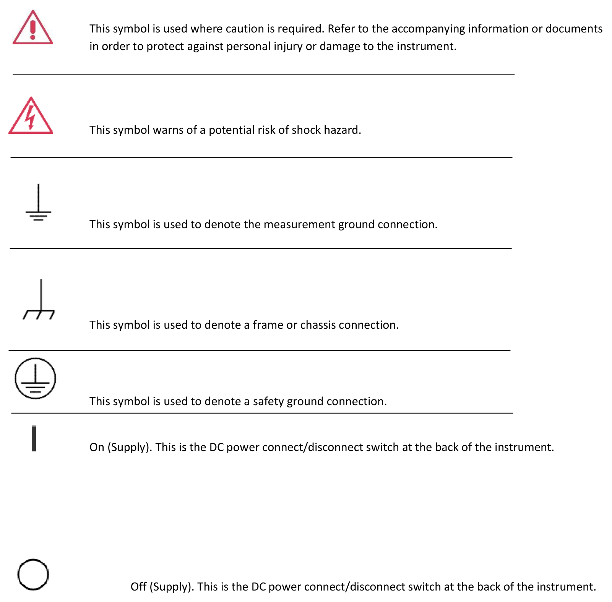
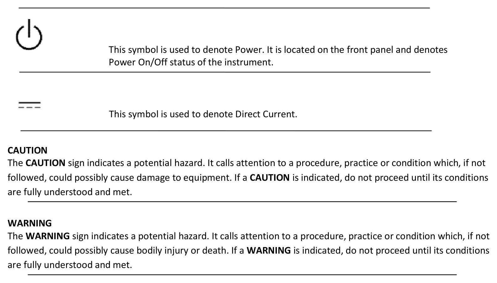
CAT I. Installation (Overvoltage) Category rating per EN 61010-1. CAT I rated terminals must only be connected to source circuits in which measures are taken to limit transient voltages to an appropriately low level.
2. Operating Environment & Requirements
Operating Environment
The instrument is intended for indoor use and should be operated in a clean, dry environment. Before using this product, ensure that its operating environment is maintained within these parameters.
| Parameter | Specification |
|---|---|
| Temperature | 5 °C to 40 °C |
| Humidity (operating) | 5 % to 80 % RH, max wet bulb 29 °C at or below +40 °C (de-rates to 20.6 % RH at +40 °C), non-condensing |
| Humidity (non-operating) | 5 % to 95 % RH, max wet bulb 40 °C at or below +60 °C (de-rates to 29.8 % RH at +60 °C), non-condensing |
| Altitude (operating) | Up to 3,000 m (9,842 ft) at or below 25 °C |
AC Power Source
For the external AC adapter: 100 to 240 VAC (+/-10%) at 45-66 Hz; automatic AC voltage selection; Installation Category 300V CAT II. No manual voltage selection is required because the external AC adapter automatically adapts to line voltage. Power consumption is 150 watts or less.
Calibration. The recommended calibration interval is one year. Calibration should be performed by qualified personnel only.
Cleaning. Clean only the exterior of the instrument, using a damp, soft cloth. Do not use chemicals or abrasive elements. Under no circumstances allow moisture to penetrate the instrument.
Abnormal Conditions. Operate the instrument only as intended by the manufacturer. If you suspect the instrument protection has been impaired, disconnect the power cord and secure the instrument against any unintended operation. Any use of the instrument in a manner not specified by the manufacturer may impair the instrument safety protection.
Environmental Considerations
Production of this equipment required the extraction and use of natural resources. The equipment may contain substances that could be harmful to the environment or human health if improperly handled at the product end of life. Recycle this product in an appropriate system. This product complies with the European Union requirements according to Directive 2002/96/EC on waste electrical and electronic equipment (WEEE).
Operating Requirements
| Power Supply | Condition | Min | Nom | Max | Units |
|---|---|---|---|---|---|
| Voltage | 45-66 Hz | 85 | 100-240 | 264 | VRMS |
| Voltage | 360-440 Hz | 100 | 115 | 132 | VRMS |
| Voltage Wave | All | Sine | |||
| Power Consumption | — | Maximum 150 W, measured 125 W | |||
| Surge Current | 25 °C | 30 A peak for 5 line cycles, after off ≥ 30 s | |||
| Mechanical / Environmental | Specification |
|---|---|
| Net Weight | 10.5 kg (11.5 kg with package) |
| Overall Dimensions | Height 160 mm, Width 450 mm (with package: Height 210 mm, Width 500 mm) |
| Temperature (operating) | +5 °C to +50 °C (+41 °F to 122 °F) |
| Humidity (operating) | 8% to 90% RH, max wet bulb 29 °C at or below +50 °C, non-condensing |
| Altitude | Operating 3,000 m (9,843 ft); non-operating 12,000 m (39,370 ft) |
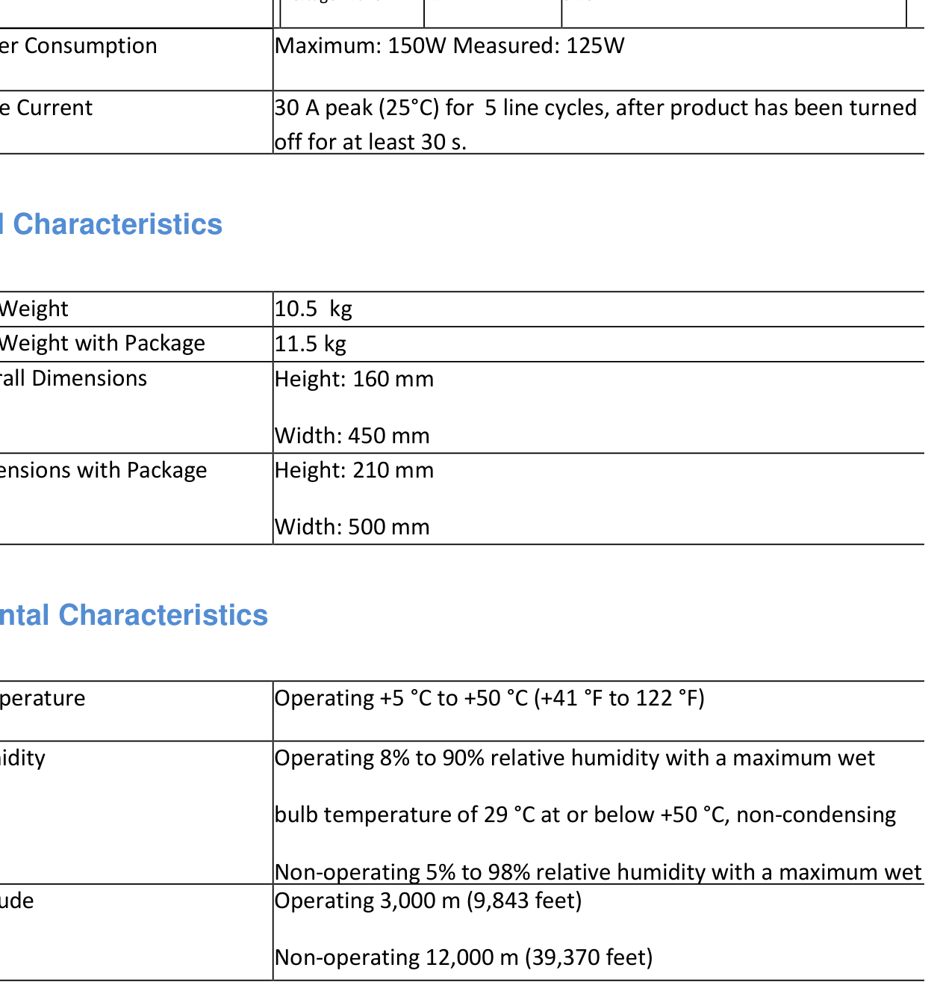
3. Preface & Package Contents
This manual describes the installation and operation of Model 765 instruments Revision B. The following instruments are supported by this manual: Model 765-2 Rev.B and Model 765-4 Rev.B.
The Model 765 Series offers premium signal integrity with the easiest to use touch screen display interface (SimpleRider). The generation of pulses requires only a few screen touches. The output voltage can be adjusted up to 5 Volts pk-pk in a window of ±5 Volts with 70 ps edge rate (based on RiderEdge technology) and transitions with minimal overshoot and ringing. Its innovative hardware architecture provides the possibility to generate advanced pulse sequences, such as double pulse or quad pulse, with fully independent timing parameters.
Package Contents
The standard Model 765 package includes: the Model 765-2 or Model 765-4 pulse generator instrument, a power cord, a Performance/Calibration Certificate, and the Model 765 Introduction and Compliance document.
2-4 Channels
The pulse generator is available with the basic Dual Channel (765-2) version or with the Quad Channel version (765-4). Each channel may generate pulses with rise time as low as 70 ps, thanks to the RiderEdge amplifier, and frequency repetition rate from mHz to 125 MHz in single pulse mode and 800 MHz in quadruple pulse mode. By using the Multiple output pulses feature it is also possible to reach a maximum repetition rate of 800 MHz. Output voltage is fully adjustable up to 5 Volts pk-pk inside a voltage window of ±5 Volts. The offset is adjustable inside a voltage window of ±2.5 Volts.
The RiderPulse Generator family can produce multiple output pulses (double pulse, quad pulse) with independent repetition rate, width, delay, amplitude and polarity. This gives the possibility to use the instrument as a digital delay generator for rescaling, synchronizing, delaying, gating and triggering multiple devices with respect to one unique event.
Trigger, View, Generate and Sync
Trigger events may be generated internally or captured by an external trigger source or remotely from Ethernet or GPIB connections. Trigger In and Trigger Out may be used to synchronize multiple units to obtain several pulses and to provide a solution for Big Physics, military applications or semiconductor testing.
Touch Screen Display and Soft Keyboard
The Rider Series delivers a 7" capacitive touch screen display, and the touch-screen friendly SimpleRider software allows users to generate pulses quickly by a few screen touches. The UI ergonomic approach offers multiple ways to operate the instrument with a complementary soft keyboard and a central knob for fine-tuning and adjustments during set up. All instrument controls and parameters are accessed through an intuitive UI that recalls the simplicity of tablets and modern smart phones. The swipe gesture gives easy access to the output and pulse parameters. A touch-friendly virtual numeric keypad improves the data-entry experience. Model 765 supports the most common interfaces for remote control (Ethernet, GPIB).
Recommended Accessories
| Item | Description |
|---|---|
| RM KIT | Rack Mount Kit |
| SSD KIT | SSD Solid State Drive |
| WAR EXT | Warranty Extension |
| CAL. CERT | Certification of Calibration |
Power the Instrument On and Off
Power On: insert the AC power cord into the power receptacle on the rear panel; use the front-panel power button to power on the instrument; wait until the system shows the Windows desktop; the Model 765 software will start automatically.
Power Off: close the application in use; press the front-panel power button to power off the instrument.
Protect Your Instrument from Misuse
When connecting a cable, be sure to distinguish the input connector from the output connectors to avoid making the wrong connection. The instrument has both input and output connectors on the front panel.
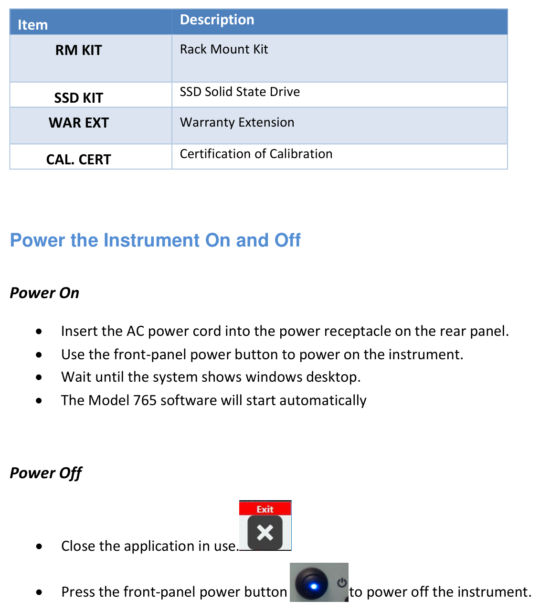
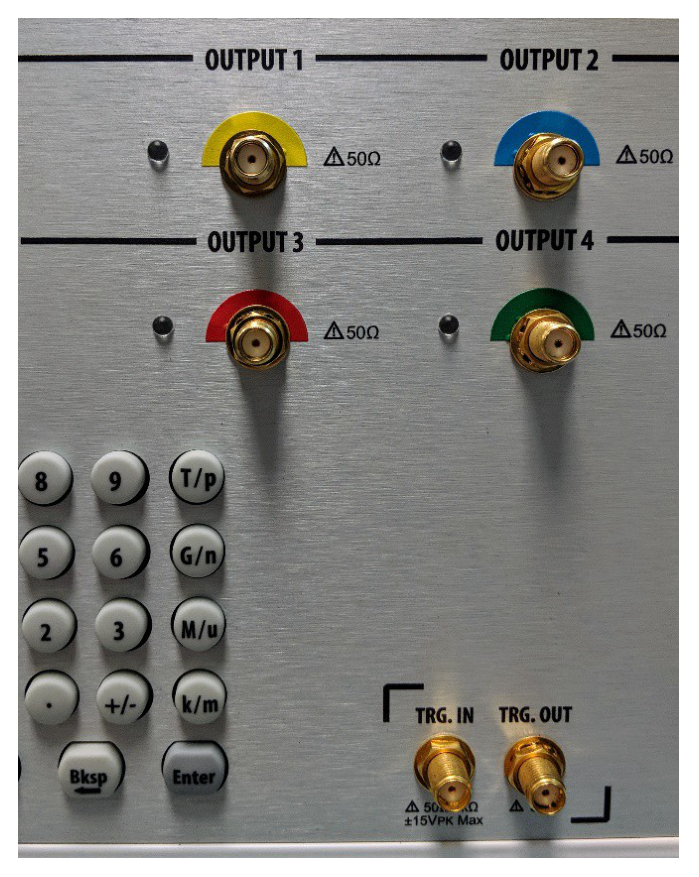
4. Getting the Software & Remote Control
Obtaining the Latest Version Releases
The latest version of an optional application that you ordered with your instrument may not be installed on your instrument. To download the latest version of software, register on the Berkeley Nucleonics website (www.berkeleynucleonics.com), press the Register button in the upper right, then navigate to the Product page and scroll down to the Software, Firmware and Drivers section and click the link to start the download.
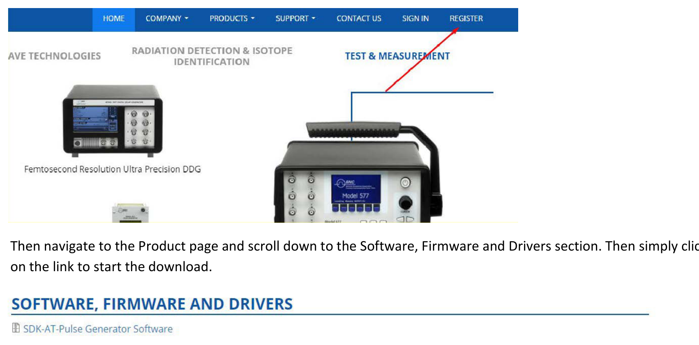
Install the Model 765 Pulse Generator Application
If your instrument already has another version of the Pulse Generator app installed, you must first uninstall it.
- Download the Model 765 Pulse Generator setup package from the Berkeley Nucleonics website and decompress it to the instrument local disk.
- Right click on the
Add-AppDevPackage.ps1file and select "Run with PowerShell". - Follow the steps in the script.
- When the application has been installed, press Return to continue.
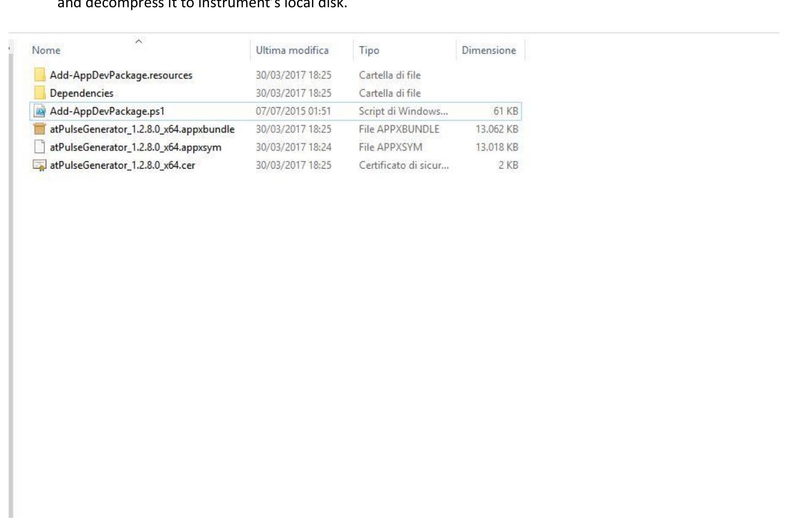
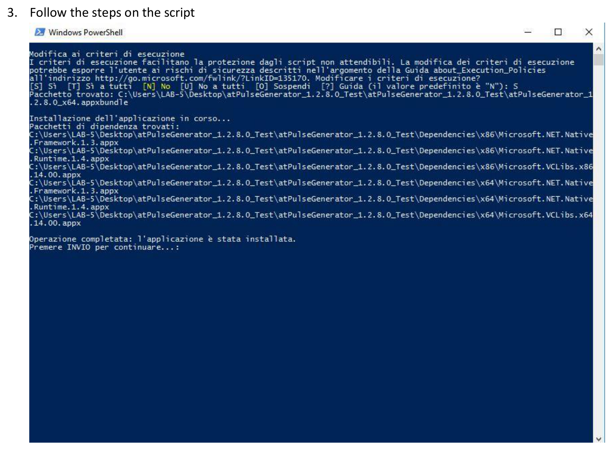
Remote Control
You can connect your instrument to a network for printing, file sharing, and Internet access. Consult your network administrator and use standard Windows utilities to configure the instrument for your network. The instrument can be controlled using the VXI-11 (LAN) protocol, allowing remote control with SCPI commands. Refer to the Model 765 programmer manual for a complete description of all available commands.
NI-VISA
VISA provides the programming interface between the hardware and development environments such as Visual Studio .NET, LabVIEW, LabWindows/CVI, Measurement Studio and MatLab. NI-VISA is the National Instruments implementation of the VISA I/O standard.
- Connect your LAN cable to the instrument.
- On the Client-PC install the latest NI-VISA package.
- Launch the NI-MAX tool on the Client-PC and press Add Network Device → VISA TCP/IP Resource.
- Select Auto-detect of LAN Instrument.
- The panel retrieves the discovered instruments on the LAN; select the Model 765 series one.
- Specify an Alias for the selected resource.
- Press Finish. The Model 765 resource will be available in the Network Devices list.
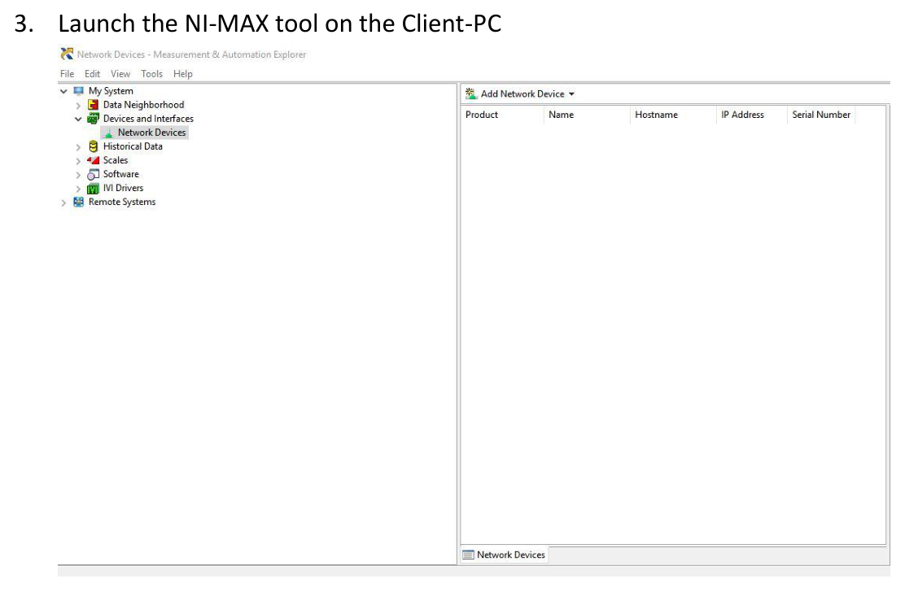
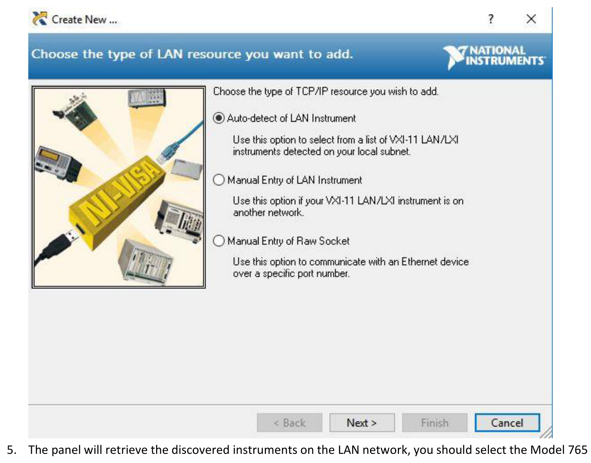
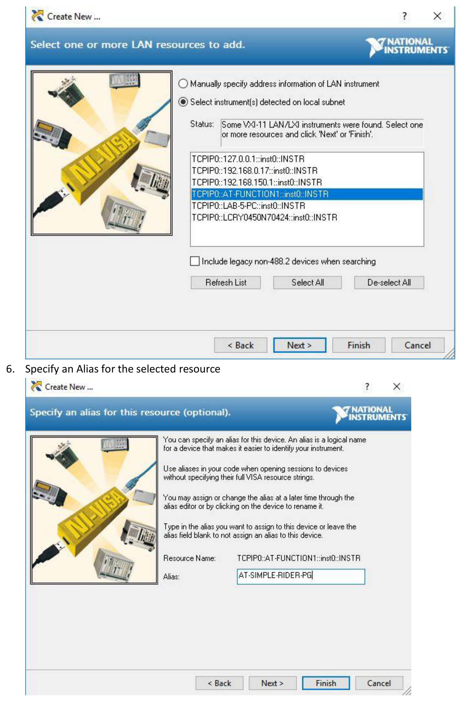
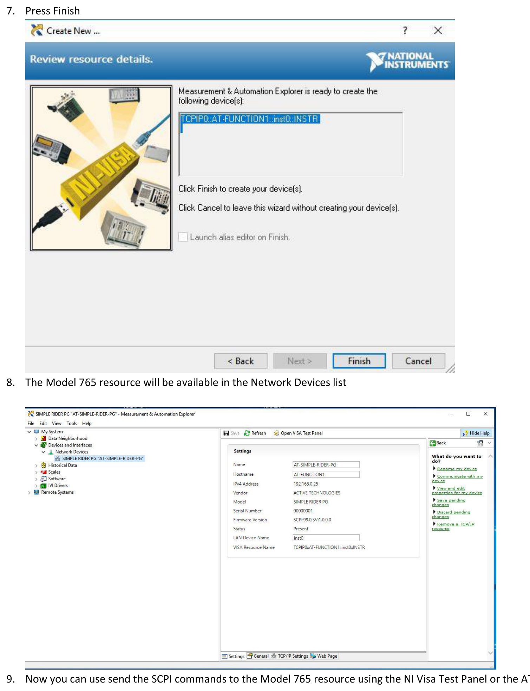
AT Instrument Communicator
The instrument VXI-11 LAN Server provides software connectivity between your instrument and remote PCs over an Ethernet LAN. The AT-Instrument-Communicator software is a client-side tool that uses NI-VISA on each remote PC.
- On the Client-PC, launch the AT Instrument Communicator setup and install the software.
- Select the Model 765 resource on the Device list and press Connect.
- If the connection is established, the SCPI command button will be enabled.
- Write
*IDN?in the command and press the Query button. - In the Event Logger list the instrument responds, for example:
ACTIVE TECHNOLOGIES, AT-PULSE-RIDER PG1072 00000001, SCPI 99.0, SV 1.0.0, where 00000001 is the serial number, SCPI 99.0 is the SCPI command version and SV 1.0.0 is the software version. - A command script is a list of SCPI commands (one per line) saved in a txt file; send it using File → Load Script.
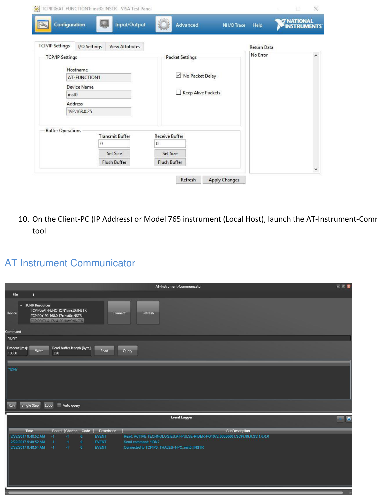
5. Instrument Overview
Front Panel
The front panel provides the analog outputs, trigger connectors and user controls. Analog Outputs: OUTPUT 1 and OUTPUT 2 are single-ended, DC-coupled analog outputs on SMA connectors; OUTPUT 3 and OUTPUT 4 (PG1074 / 765-4 only) add two more. Each DC-coupled output has 50 Ohm output impedance; for a differential output, use OUTPUT 1 and OUTPUT 2 and set them in the SimpleRider UI as positive and negative pulses. The front panel also carries the 7" capacitive touch screen, the soft keyboard and rotary knob, the power on/off button, the numeric keypad, the Trigger IN / Trigger OUT SMA connectors, and USB 3.0 ports.
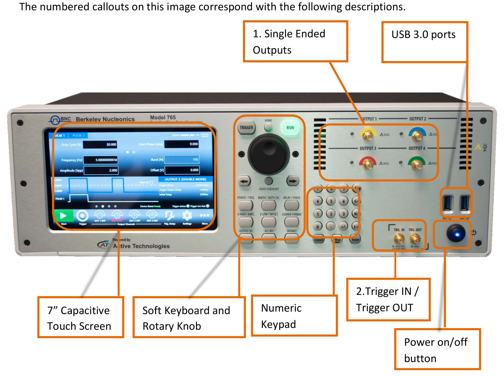
Trigger Input / Output
TRG.IN is an SMA input connector for Trigger IN with a programmable impedance of 50 Ohm or 1 k Ohm and a programmable threshold level in the range -10 V to 10 V. TRG.OUT is an SMA output connector for Trigger OUT; the trigger output impedance is 50 Ohm and the voltage range on open load is from 1.8 V to 3.3 V.
Rear Panel
The rear panel includes PS/2 mouse and keyboard ports, HDMI, a VGA port, three COM ports, two removable SSD slots, two USB 2.0 ports, two USB 3.0 ports, two LAN ports, audio IN/OUT ports, the power input, the power-supply on/off switch, and the EXT CLK IN and EXT CLK OUT SMA ports.
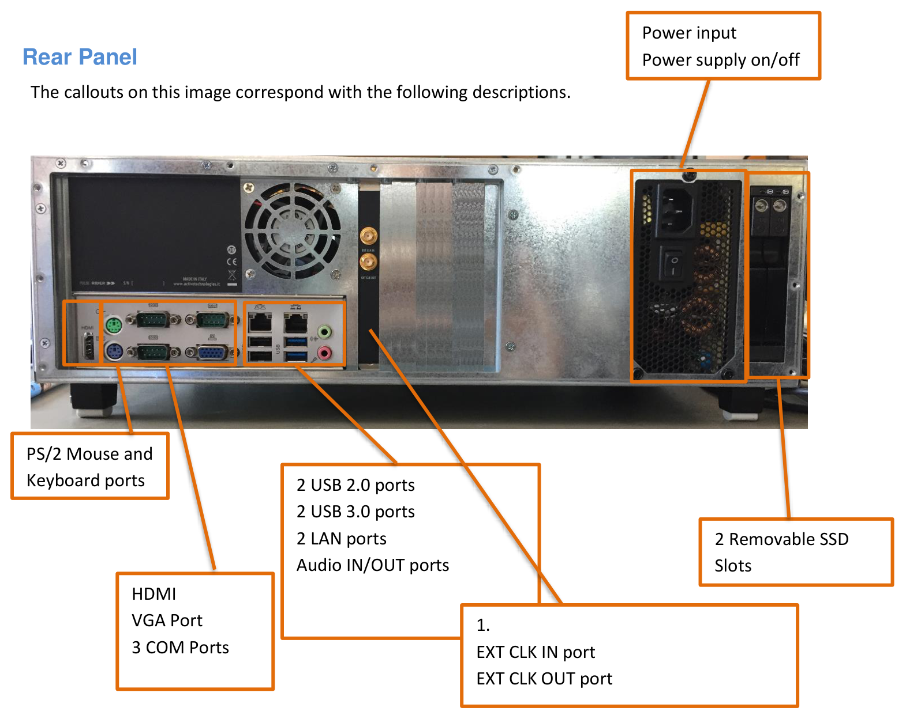
External Clock. EXT. CLK IN (SMA) lets the Model 765 use an external clock source to generate the instrument time base, synchronizing the generator with an external clock. EXT. CLK OUT (SMA) outputs the internal 10 MHz reference clock when the source is internal, or the Ext.Clk.IN value when the source is external.
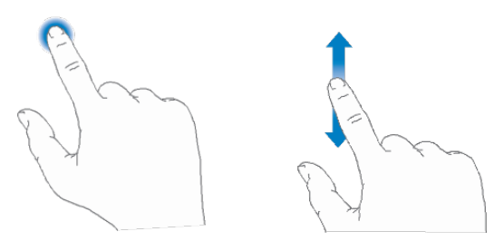
6. Getting Started with Model 765
Instrument Control
The Model 765 includes a 7" capacitive touch screen and the SimpleRider touch user interface based on a Microsoft Windows platform. You can control instrument operations using the touchscreen, the front-panel soft key controls, or a keyboard and mouse. All important instrument controls and settings are always one touch away: swipe gestures change the channel and pulse selection and give access to the modulation parameters, the touch-combiner combines multiple pulses easily, and the touch-friendly virtual numeric keyboard changes parameter values on the fly.
Front Panel Buttons
Most of the buttons you use with the Model 765 are virtual ones on the touchscreen, but a few physical buttons control basic functions such as setting the pulse amplitude, offset, delay and width. A physical numeric keypad is available on the front panel and can be used instead of the virtual numeric pad. A central knob is available for fine-tuning and adjustments during on-the-fly setup. The rotary knob changes the value in a continuous, analog fashion; the push button rotary knob lets you change the value increment between Coarse and Fine adjustment. The arrow keys move the selected digit. You can keep the rotating knob pressed and rotate it to change the Delta increment.
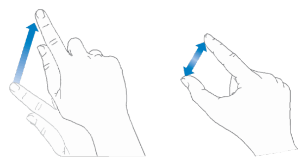
| Button | Function |
|---|---|
| HOME | From a software sub-menu page, returns to the main page. |
| TRIGGER | Sends an internal trigger to the instrument. |
| RUN | Starts and stops pulse generation. A green LED means the instrument is running (or armed, ready to receive the trigger signal). |
| LEFT ARROW | With the virtual numeric keypad open, moves the digit selection cursor left. |
| RIGHT ARROW | With the virtual numeric keypad open, moves the digit selection cursor right. |
| TOUCH SCREEN OFF | Disables the touch screen. |
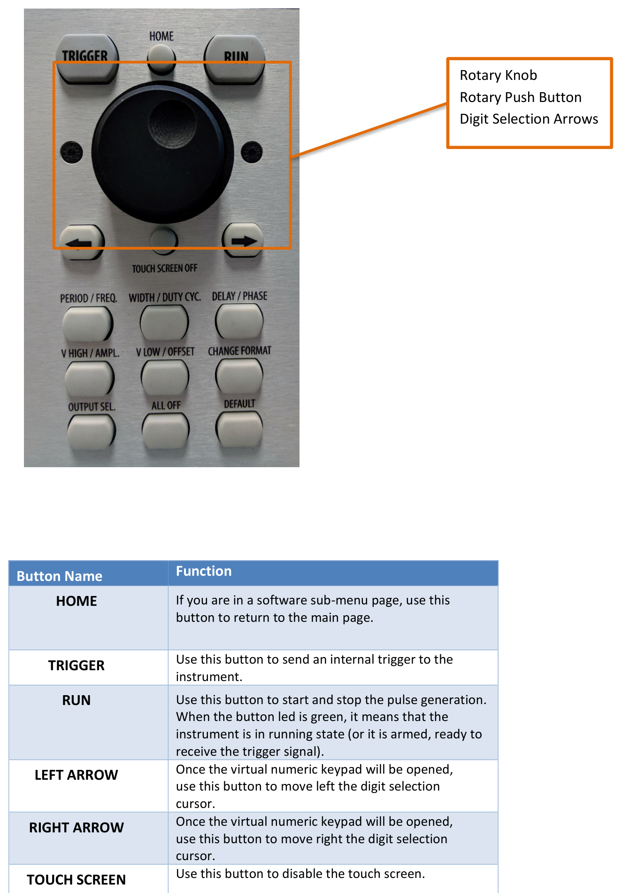
| Button | Function |
|---|---|
| PERIOD/FREQ | Sets the period or the frequency of the pulse waveform. |
| WIDTH / DUTY CYC. | Sets the width or the duty cycle of the pulse waveform. |
| DELAY/PHASE | Sets the delay or the phase of the pulse waveform. |
| V HIGH/AMPL. | Sets the high voltage level or the amplitude of the pulse waveform. |
| V LOW/OFFSET | Sets the low voltage level or the offset of the pulse waveform. |
| CHANGE FORMAT | Changes the data-entry format between Format A (Period, Width, Delay, Phase, Voltage Level High, Voltage Level Low) and Format B (Frequency, Duty Cycle, Phase, Amplitude, Offset). |
| OUTPUT SEL. | Changes the output selection in the user interface. |
| ALL OFF | Turns off all the outputs. |
| DEFAULT | Restores the default settings. |
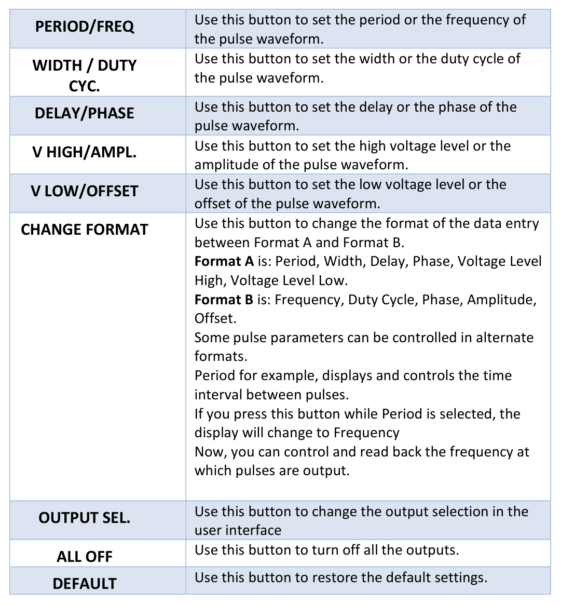
Front Panel Numeric Keypad
The physical numeric keypad lets you set the pulse parameter value and its measure unit. Use the touch panel to select the pulse parameter; each number pressed is shown on the display, and the Bksp key deletes erroneous key presses. The [+/-] key toggles the sign of the number being entered and may be pressed at any time before terminating entry. After the sign and numeric portion are entered, terminate entry with the appropriate multiplier by pressing one of the four unit-measure keys at the right of the keypad. When you select a parameter, pressing the unit measure button automatically sets the available range linked to the parameter.
| Unit Measure Range Button | Range |
|---|---|
| T/p | Tera / pico |
| G/n | Giga / nano |
| M/u | Mega / micro |
| k/m | Kilo / milli |
For example, when you select a Frequency parameter and press k/m the inserted unit is kHz; pressing M/u inserts MHz; pressing it again inserts GHz; pressing T/p does nothing because that range is not available for the selected parameter. If more than one unit-measure range is available for a parameter (for example Mega and Micro), toggling the range button switches between them.
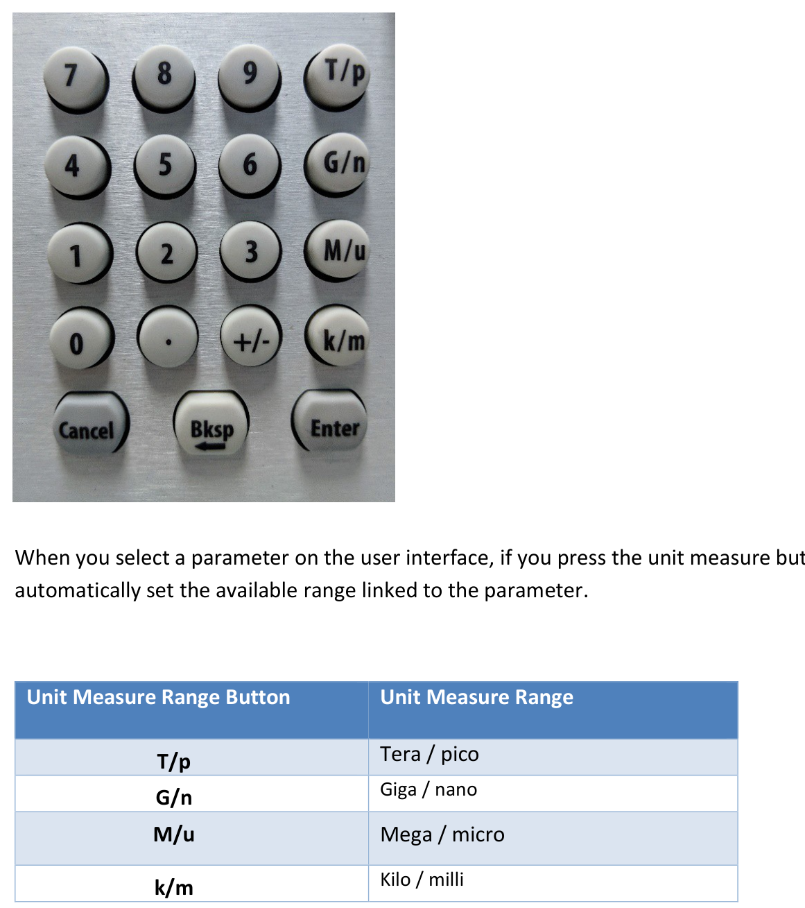
7. Output and Pulse Definition
The term Output Channel refers to the analog signal at the SMA output connectors (OUTPUT 1, OUTPUT 2, OUTPUT 3, OUTPUT 4) on the front panel. The Output Channel parameters are Voltage High / Amplitude [V], Voltage Low / Offset [V], and Period [s] / Frequency [Hz].
The term Pulse refers to the logical pulse generated internally by the digital core of the Model 765 and used to compose the analog output channel signal. Up to four digital pulses, called PULSE1, PULSE2, PULSE3 and PULSE4, are available for each output channel; this feature lets you generate multiple pulses at the output channel. The Pulse parameters are Width [s] / Duty Cycle [%] and Delay [s] / Phase [degree].
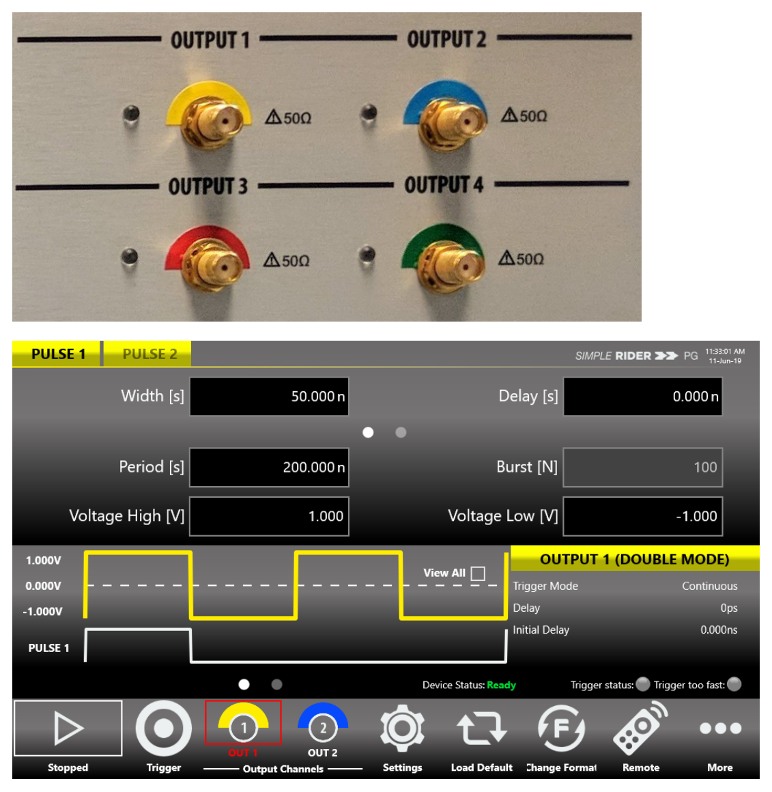
Output Channel Parameters
Vertical parameters. The default format provides control of the vertical (voltage) parameters of the output channel. Voltage High [V] controls the output high voltage level; Voltage Low [V] controls the output low voltage level. The output signal levels indicated by the SimpleRider UI are delivered into a 50 Ohm load. Pressing the Change Format button changes the display of those parameters to Amplitude [V] and Offset [V]. Amplitude [Vpp] is the difference between the active and quiescent levels of the output pulse; Offset [V] is the quiescent level of the output channel signal.
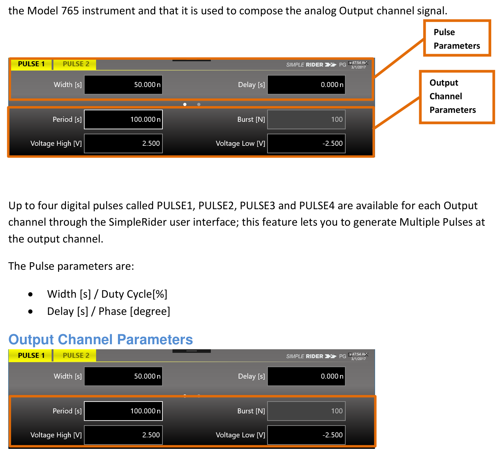
Period / Frequency. Period [s] defines the time between output pulses in Continuous, Burst and Gated mode. Pressing Change Format changes the display to Frequency. Frequency [Hz] controls the frequency of output pulses in Continuous, Burst and Gated mode.
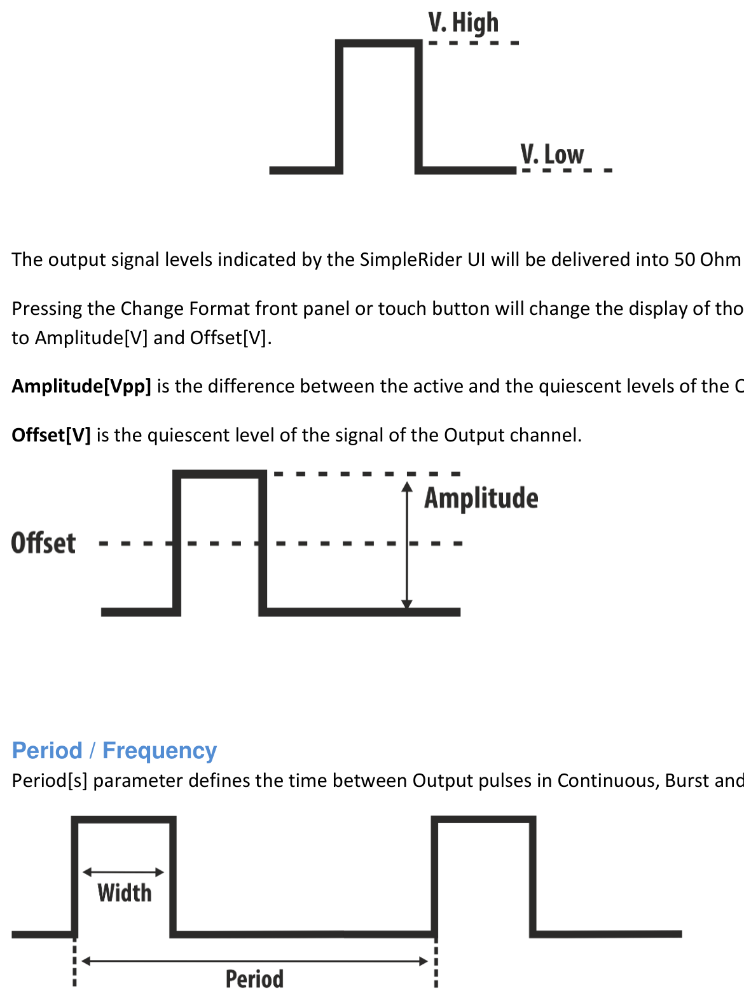
Pulse Parameters
Width / Duty Cycle. The time duration of the pulse is controlled by the Width / Duty Cycle parameter. Width [s] defines the time interval during which Pulse N is in the active state. Pressing Change Format changes control over the duration to Duty Cycle. Duty Cycle [%] defines the percentage of the Period over which Pulse N is in the active state.
Delay / Phase. Delay [s] defines the time interval from the Trigger Output to Pulse N, excluding an initial output-channel delay that can be set in the Settings page. Pressing Change Format changes the displayed name for Delay to Phase. Phase [degree] provides position control proportional to Period, with 0 degrees corresponding to the minimum Delay setting. This phase angle is maintained as Period is varied; once Phase is set, the Pulse Delay = (Phase / 360) × Period.
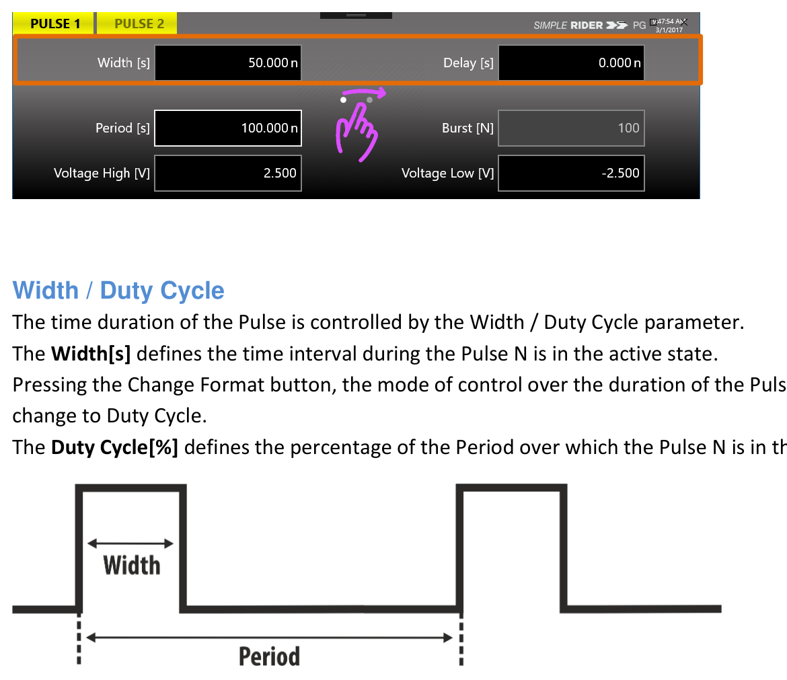
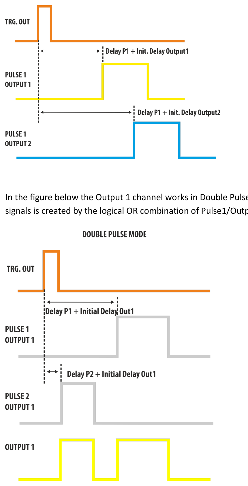
Parameter Conflicts and Limits
To avoid conflicts the following conditions must be true: Voltage High > Voltage Low, and Width [s] + Delay [s] < Period [s].
| Parameter | Min | Max |
|---|---|---|
| Voltage High | -5.0 V | +5.0 V |
| Voltage Low | -5.0 V | +5.0 V |
| Amplitude | -2.5 V | +2.5 V |
| Offset | -2.5 V | +2.5 V |
| Width | 300 ps | 8 s |
| Duty Cycle | 1 % | 99.9 % |
| Period | 5 ns | 8 s |
| Frequency | 0.125 Hz | 200 MHz |
| Delay | 0 s | 8 s |
| Phase | 0 degree | 360 degree |
| Burst N | 1 | 4294967295 |
Multiple Pulses Operation
Four digital pulses are available on each output and are logically combined by an OR operation, giving you the possibility of generating multiple pulses on the output SMA connector reaching up to 800 MHz repetition rate. In Continuous and Single Trigger modes, when the Multiple Pulse feature is off, one output pulse follows each Trigger Output. Pressing the Settings button on the command bar accesses the Output Mode selection; in Continuous and Single modes you can have two, three or four output pulses for each Trigger Output. On the right of the page, click the arrow icon to expand or collapse the picture that graphically explains the output composition in relationship to the pulses.
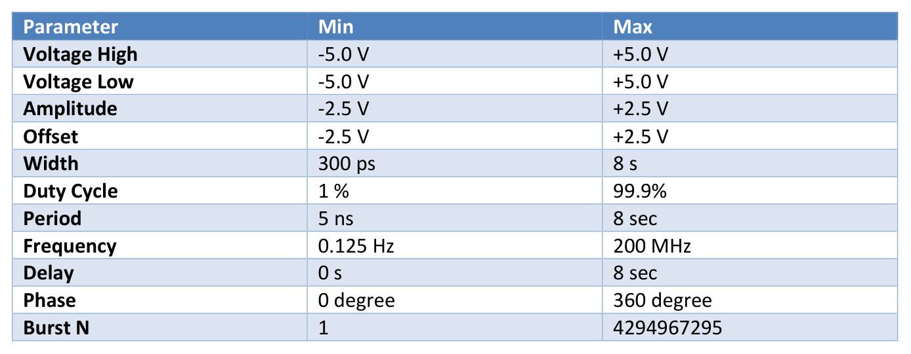
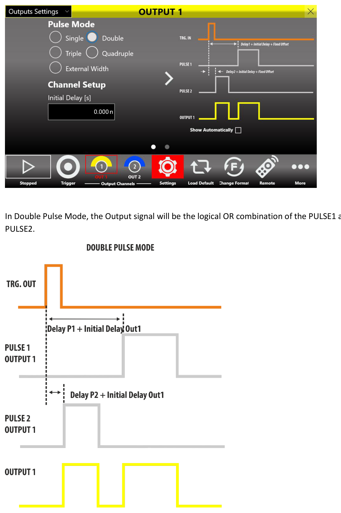
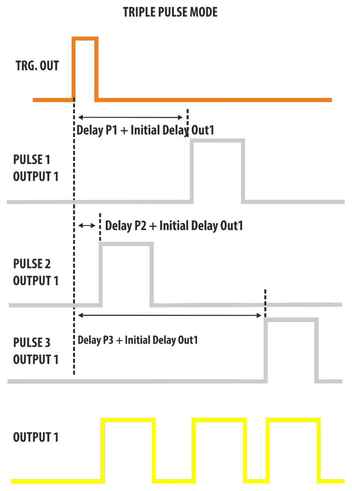
Hint: How to Generate a Clock
It is possible to create a clock with a frequency greater than 200 MHz using the multiple pulse mode: calculate the clock Period (PeriodClock = 1/Frequency); find the lowest value of N (2, 3 or 4) that satisfies N × PeriodClock > 8 ns; select Single Pulse mode, set Width = PeriodClock/2, Delay = 0 ns, Period = N × PeriodClock; then select the multiple pulse mode that corresponds to N (2 = Double, 3 = Triple, 4 = Quadruple). Example for 333 MHz: PeriodClock = 3.003 ns; N=2 gives 6.006 ns (not > 8 ns); N=3 gives 9.009 ns (yes), so use Triple Pulse Mode with Width 1.501 ns, Delay 0 ns, Period 9.009 ns, then press Run.
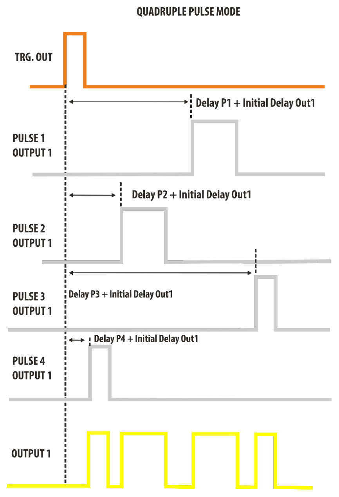
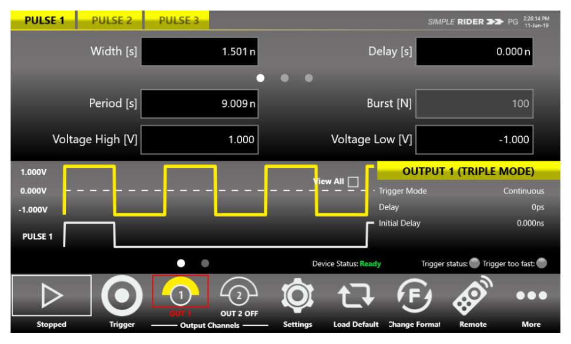
8. Trigger Controls
The Model 765 outputs are driven from a common timebase and the channel outputs are referenced to the same trigger. This means the output channels share the same trigger modes but can have different period, width and delay.
Trigger Output
The signal at the TRG.OUT connector is a selectable positive-going or negative-going pulse, synchronized with the TRG.IN signal and the internal timebase in Single, Gated and Burst mode. In Continuous mode the TRG.OUT signal is synchronized with the selected output and the internal timebase. The Trigger Output Delay parameter is relative to the signal leading edge; the width of the Trigger Output depends on the selected Trigger Mode, and its amplitude is programmable from 0.9 V to 1.65 V into a 50 Ohm load.
Trigger Input
The Model 765 can trigger on any signal connected to TRG.IN whose amplitude is greater than 20 mV. Trigger pulses as narrow as 1 ns can be detected. The impedance of the Trigger Input can be programmed to 1 k Ohm or 50 Ohm. The signal levels at TRG.IN must not exceed ±10 V into 1 k Ohm and ±3.5 V into 50 Ohm; the threshold level can be programmed in the ±8 V range with 4 mV steps. Pressing Autosense lets the instrument automatically measure the threshold of the signal applied to the Trigger In port. In the externally triggered modes (Single, Burst and Gated) the frequency counter measures the frequency of the TRG.IN signal and displays it in the Trigger Setup window. In Single, Burst and Gated mode the software trigger (trigger button) is always active independently from the selected trigger source.
Trigger Modes
The Model 765 has four trigger operating characteristics: Single, Burst, Gated and Continuous.
Single Mode
In Single Mode the Trigger IN source can be sent externally using the TRG.IN connector or internally using the front panel button, SCPI command or timer. The Trigger Output signal is linked to one of the available outputs using the Trigger Output → Trigger Source dropdown list. The Trigger IN signal starts the timebase and one TRG.OUT signal follows each trigger detected on the selected output channel with a delay below 100 ns. The output pulses follow the Trigger Output signals by a Delay user parameter plus an initial channel delay; in this mode the output signals are generated once. The Period parameter has no meaning in Single Trigger Mode and the output pulse duration is determined by Delay plus Width. The Trigger Output width is fixed at about 10 ns.
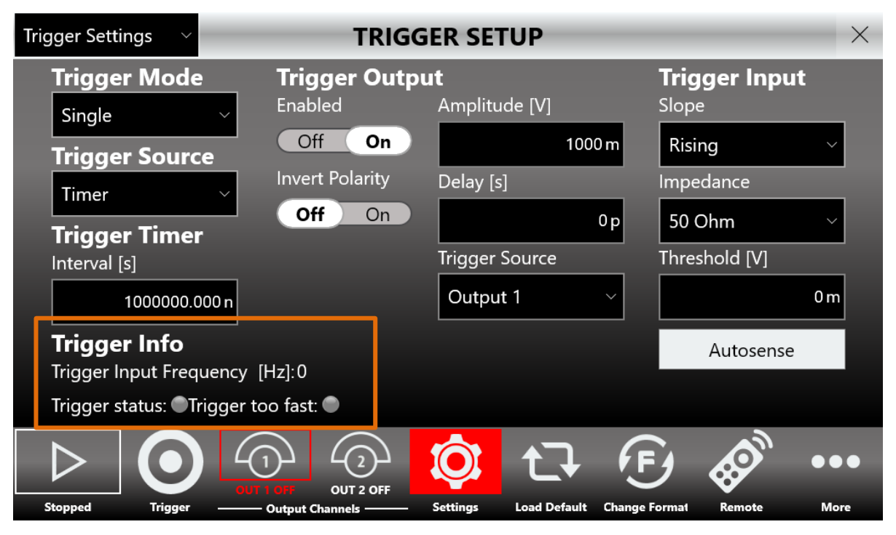
Burst Mode
Burst mode is similar to Single mode, but a programmed number of output pulses is generated for each trigger detected on the selected output, rather than just once. This number can be programmed from 1 to 4294967295 using the Burst[N] parameter. The trigger source can be external (TRG.IN) or internal (front panel button, SCPI command, timer). The time between output pulses is specified by Period and the duration of each output pulse by Width. The Trigger Output width is fixed at about 10 ns.
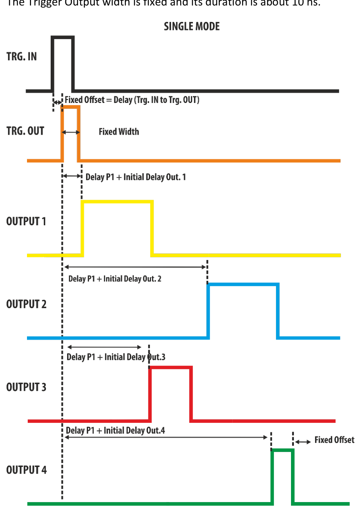
Gated Mode
In Gated mode the output pulses of the programmed Width occur at the rate specified by Period as long as the Trigger signal is true. The trigger source can be external or internal. The Trigger signal starts the timebase and one TRG.OUT signal follows each trigger by a fixed offset equal to the Trigger IN to Trigger OUT delay. The width of the Trigger Output equals the width of the Trigger IN signal. Output pulses start after the Delay parameter plus a fixed offset below 100 ns and continue at the rate defined by Period for the duration of the true state of the Trigger signal. If the Trigger Output signal goes false while an output pulse is active, generation of the output pulses stops.
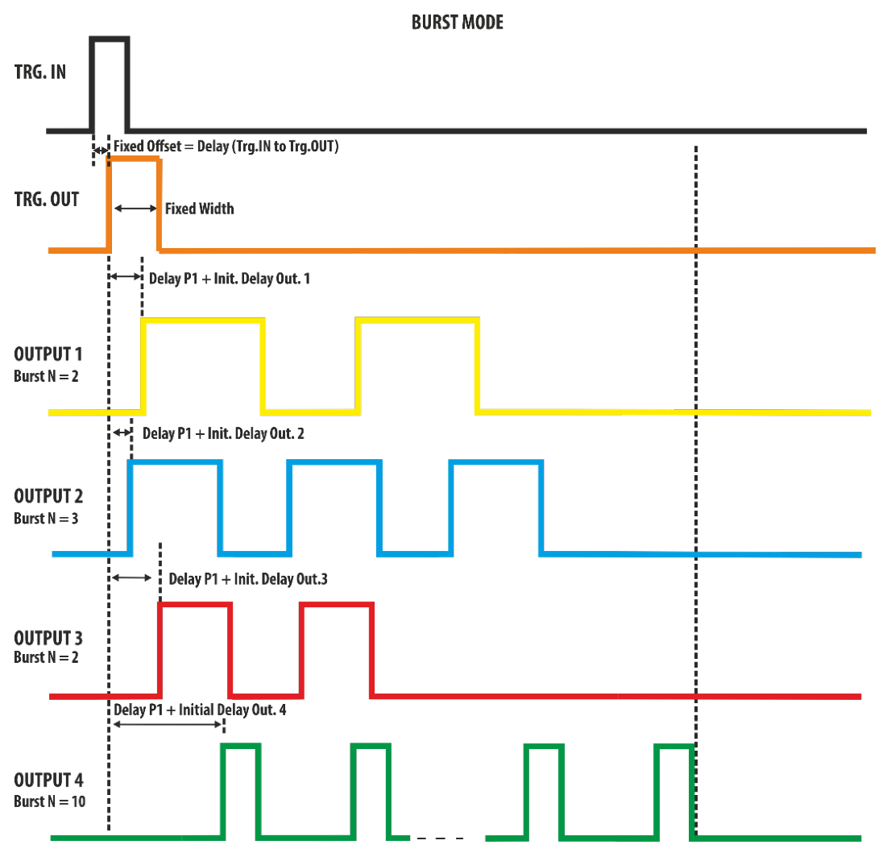
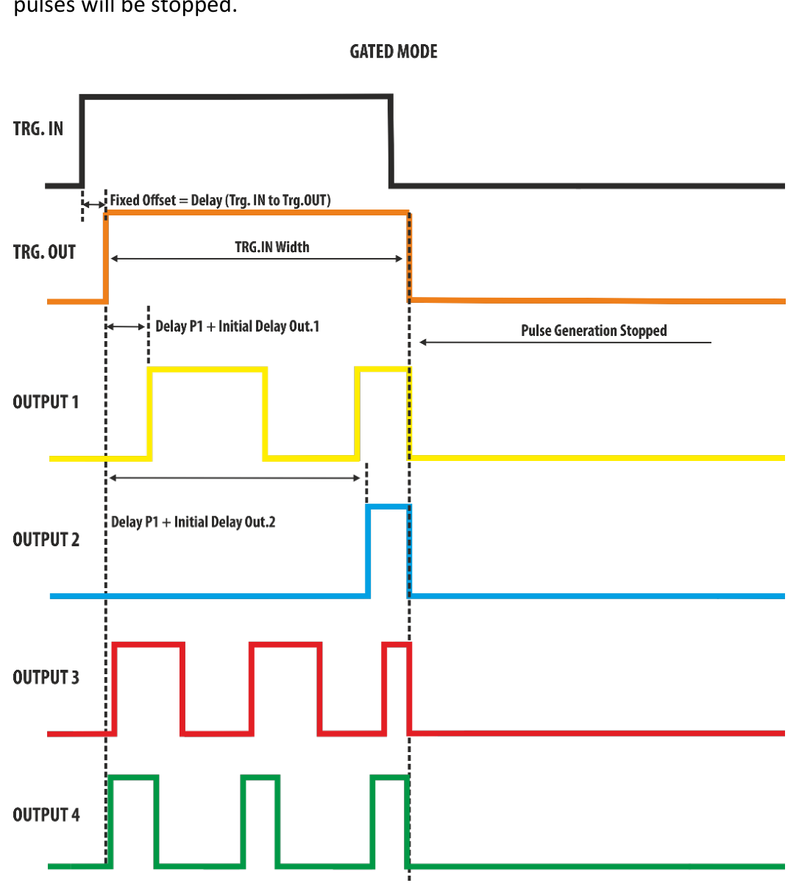
Continuous Mode
Continuous mode produces a continuous pulse stream at the selected Period and Width. One Trigger Output pulse occurs for each Pulse 1 relative to the selected output channel in the Trigger Source dropdown list. The width of the Trigger Output equals the Period of the selected output divided by 2 (Trigger Output Width = Period / 2). The output pulse follows the Trigger Output by a Delay parameter.
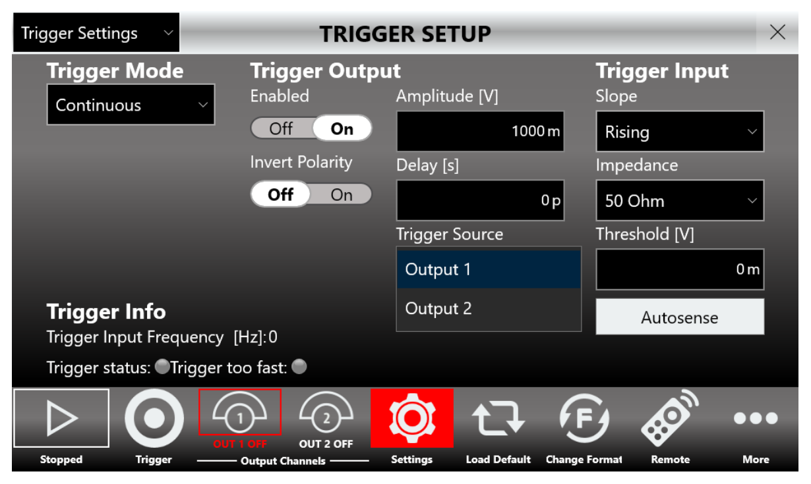
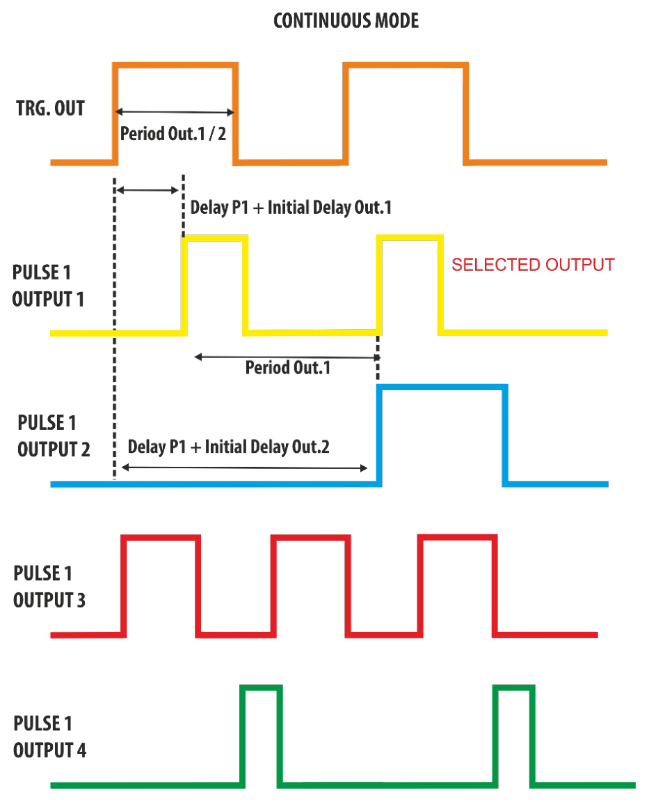
External Width Mode
In External Width mode the TRG.IN signal (SMA connector) is redirected to the output channel with programmable voltage level, threshold and output impedance. The TRG.OUT signal in Single, Burst and Gated mode follows the output channels where External Width Mode is not selected; in Continuous mode, if the selected source is External Width, the Trigger Out frequency equals the Trigger In signal frequency.
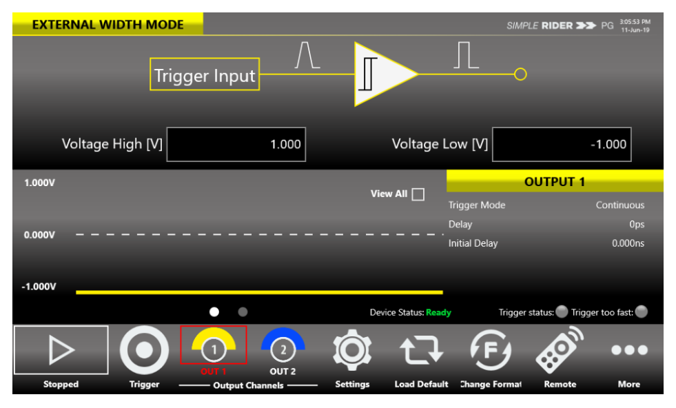
Multiple Pulse Interactions
The interaction of multiple pulses with the trigger modes: in Continuous mode, depending on the multiple pulse selection, two, three or four pulses follow each Trigger Output rather than one. Single mode behaves as Continuous mode except the group of pulses is generated only once. In Burst mode the Burst N parameter specifies the number of output pulse groups (two, three or four) per trigger rather than the number of output pulses; for example, with Double Pulse the first pulse of the first pair in any burst follows the leading edge of the Trigger Output by Delay 1 + Initial Delay Out.1, the second pulse follows the first by the Delay parameter, and the first pulse of any pair follows the first pulse of the previous pair by the Period parameter. Gated mode behaves as Continuous mode except the group of pulses is generated while the Trigger signal is true. External Width mode is the same as single pulse and is unaffected by the state of Multiple Pulses.
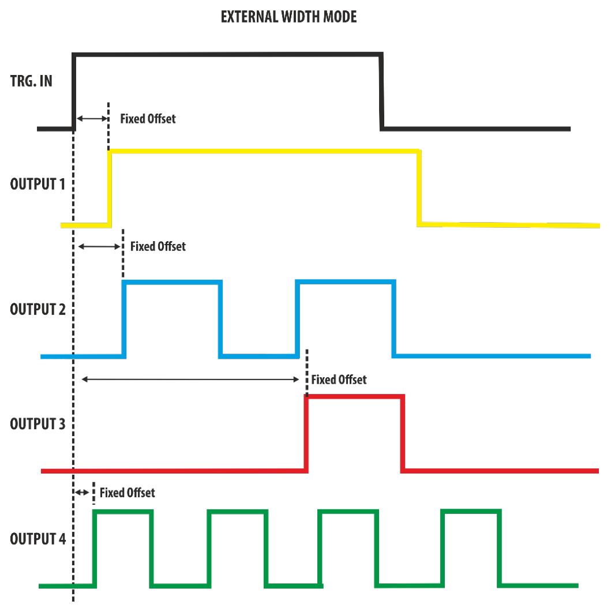
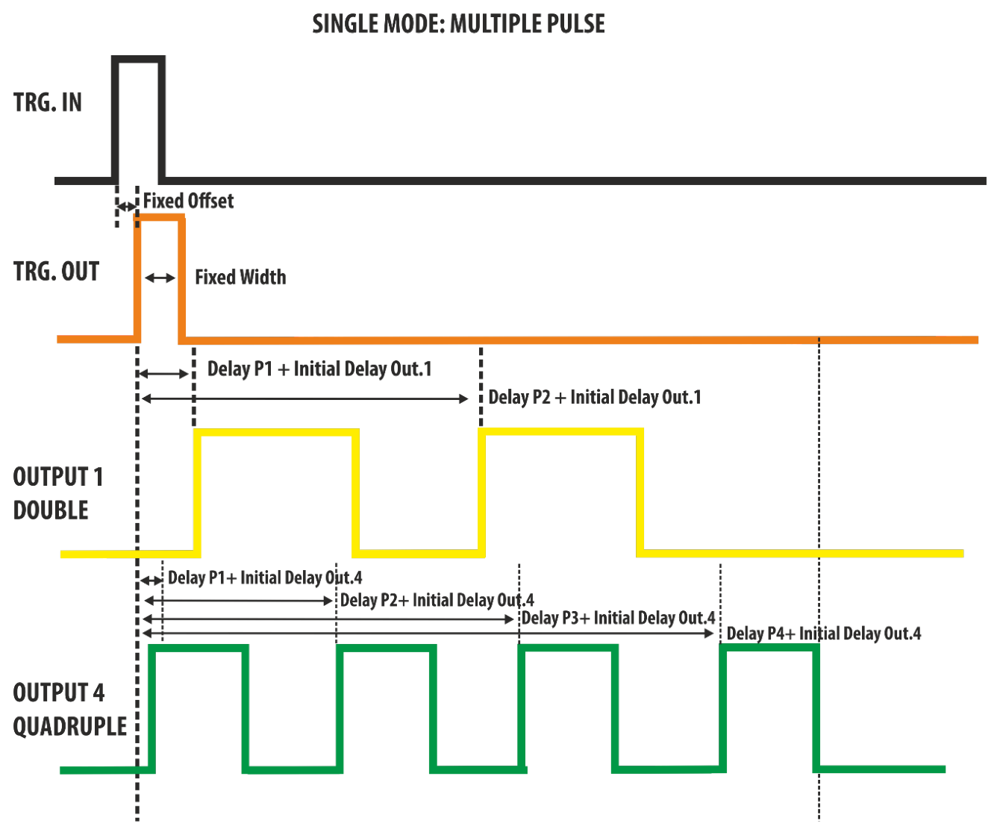
9. Quick Start
Single Pulse
If you are a beginner user, follow these steps to generate your first pulse signal:
- Connect the power cord and push the front-panel on/off switch to turn on the instrument.
- Connect Output 1 of the instrument to the oscilloscope input with a cable, and select 50 Ohm load on the oscilloscope input.
- Touch the Settings button on the SimpleRider UI.
- In Settings → Trigger Setup, select Continuous as Trigger Mode.
- By default OUT1 and OUT2 are OFF (the output is disconnected from the load using a relay). Press the OUT1 button to enable it; press OUT2 to select OUTPUT2, press it again to enable it.
- Press the Start button.
- Observe the pulse waveform displayed on the oscilloscope screen.
- Press the Settings button again to close the Settings page.
- Touch Voltage High [V] to set the output pulse high level. You can also select Period, Delay or Width using the touch screen or the front-panel physical buttons.
- Change the output pulse parameters using the virtual or physical numeric keypad, the general-purpose knob and arrow keys, or keyboard and mouse.
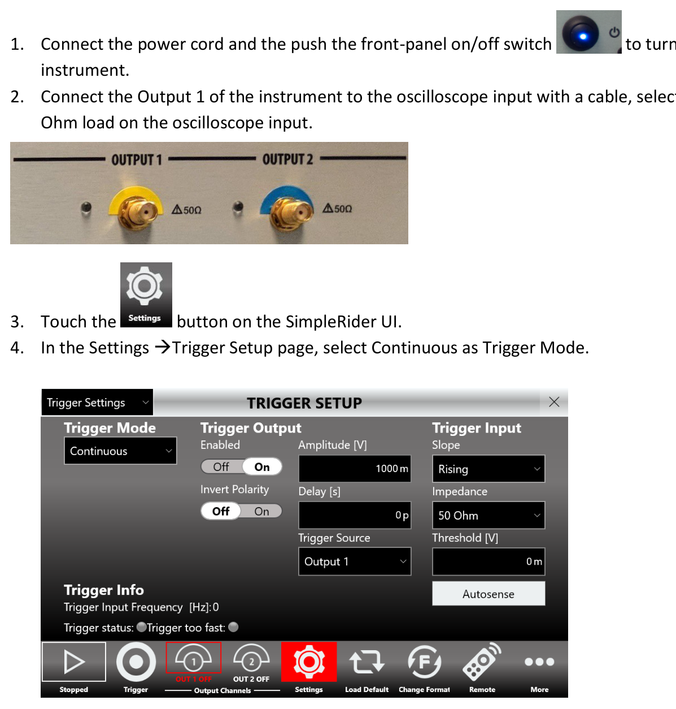
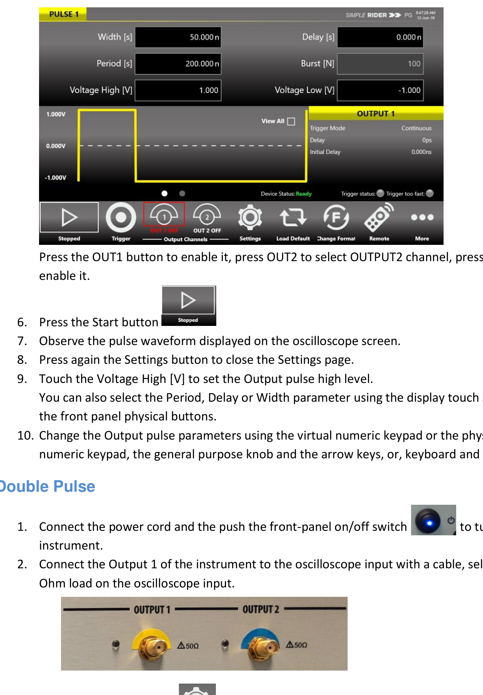
Double Pulse
- Connect the power cord and push the front-panel on/off switch to turn on the instrument.
- Connect Output 1 to the oscilloscope input and select 50 Ohm load.
- Press the Settings button, select "Outputs Settings" in the dropdown menu and select the Double Pulse option in the Pulse Mode for Output 1.
- Select "Trigger Settings" to open the Trigger Setup page and select Single as Trigger Mode and Button Only as Trigger Source.
- Press the Start button.
- Set a Single acquisition on the oscilloscope, set the scope trigger and press the Trigger button. Each time you press Trigger you observe a group of two pulses on the scope.
- Press the Settings button again to close the Settings page.
- Touch the Output 1 → Pulse 1 Delay parameter to change the Pulse 1 delay. You can also select Amplitude, Period or Width.
- Use the swipe gesture at the top of the display to change the Pulse selection from Pulse 1 to Pulse 2 and back.
- Change the output and pulse parameters using the keypads, knob and arrows, or keyboard and mouse.
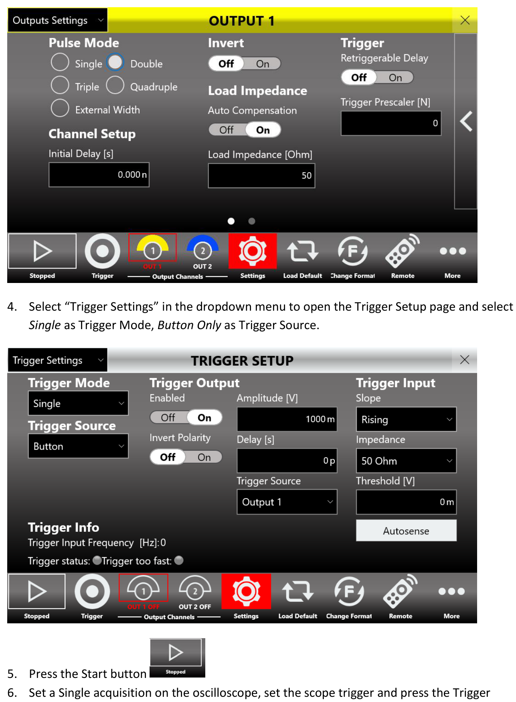
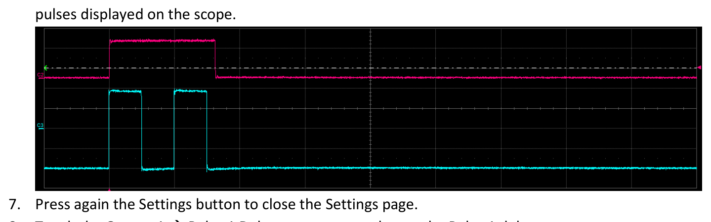
10. SimpleRider PG Software
User Interface Description
The SimpleRider software environment provides easy access to all product functions and parameters. It consists of three main elements: the Pulse and Output channel parameters area, the Waveform Graph area, and the command bar. The display is a 7" capacitive touch screen; you can access parameters and generate pulses quickly with a few screen touches. If the Multiple Pulse feature is off, use a swipe left or right gesture to change the output channel selection. If the Multiple Pulses feature is on, swipe left or right on the upper part of the screen to change the Pulse selection, and on the lower part to change the Output selection.
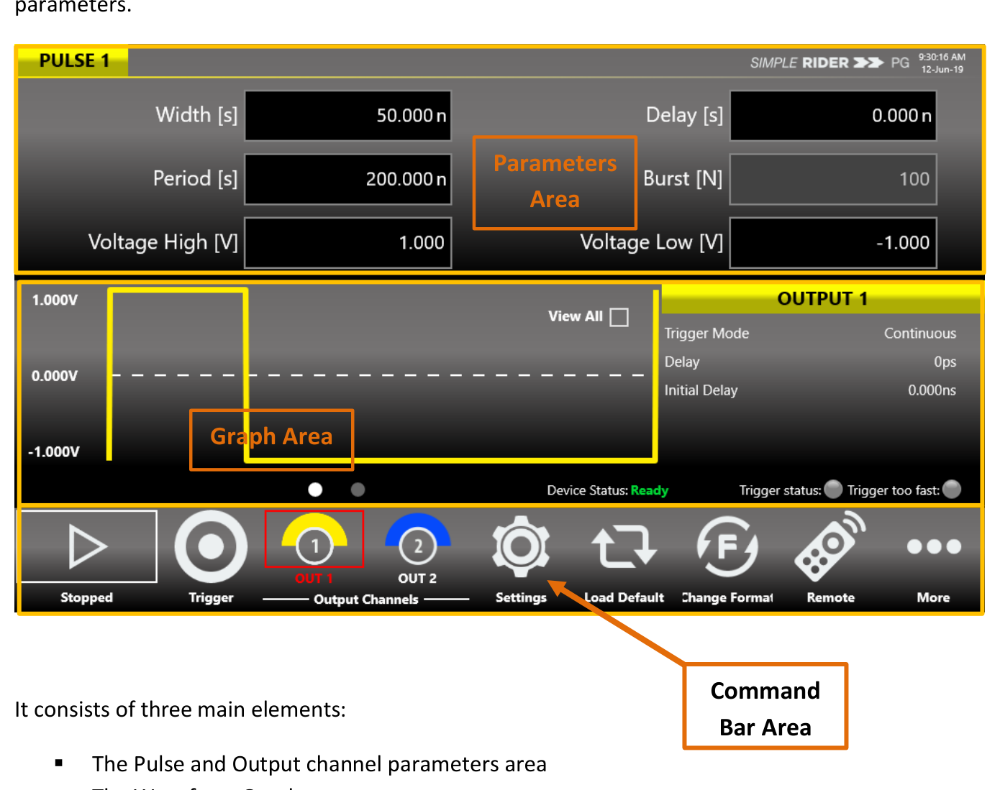
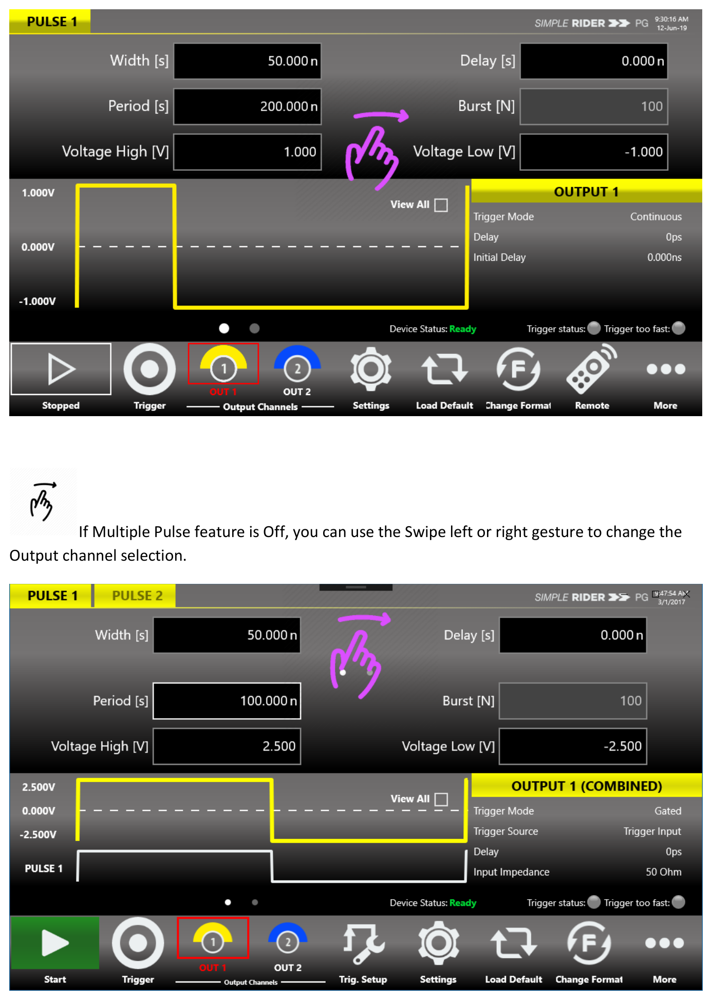
Parameters Area
If Multiple Pulses is off, the parameters area gives access to Pulse 1 (Width, Delay) and to the selected output parameters (Period, Voltage High, Voltage Low and Burst number). Touch the parameters area to open the virtual numeric keypad, edit the parameter value and its measure unit. The keypad area displays the parameter name, value and unit; select the digit to modify by touching it or using the left/right arrows; the selected digit highlights in blue. Touch MIN. and MAX. to display the allowed range, and DEF. to set the default value. Coarse / Fine changes the granularity of the increment: in Fine, the increment is 1 for the selected digit; in Coarse, the Delta increment is displayed and the value changes in steps of the selected increment. The Close button closes the keypad without applying changes; Enter confirms and applies them; Bksp deletes a key press and Delete clears the entry. A horizontal scrollbar lets you change the selected value quickly; rotary-knob and scrollbar increments are applied on the fly.
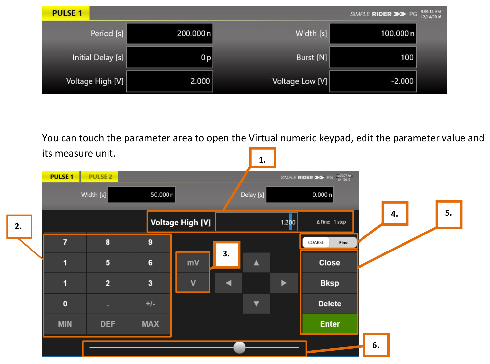
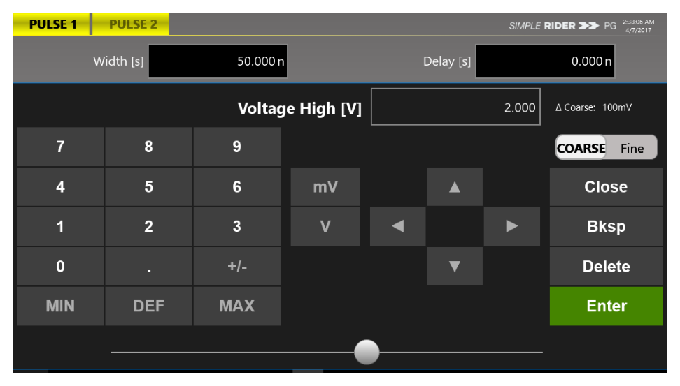
Graph Area
The graph area displays the output channel and/or pulse waveforms with a vertical legend containing the voltage high, low level and offset. The right side displays the channel name and the main current settings (Trigger Mode, Source, Amplitude, Trigger Input Impedance, etc.). The bottom shows the Device Status, Trigger Status and Trigger Too Fast indicators. Device Status "Ready" means the instrument is stopped and ready to start; pressing Run changes it to "Running" (ready to receive a trigger). The Trigger Status LED notifies you when the trigger signal is received. The Trigger Too Fast LED notifies you that a trigger event was latched but the trigger frequency is too high to rearm before completing the previous event, so some trigger events may be lost. If Double, Triple or Quadruple output pulse mode is selected, the upper area shows the output signal graph and the lower area shows the selected pulse graph.
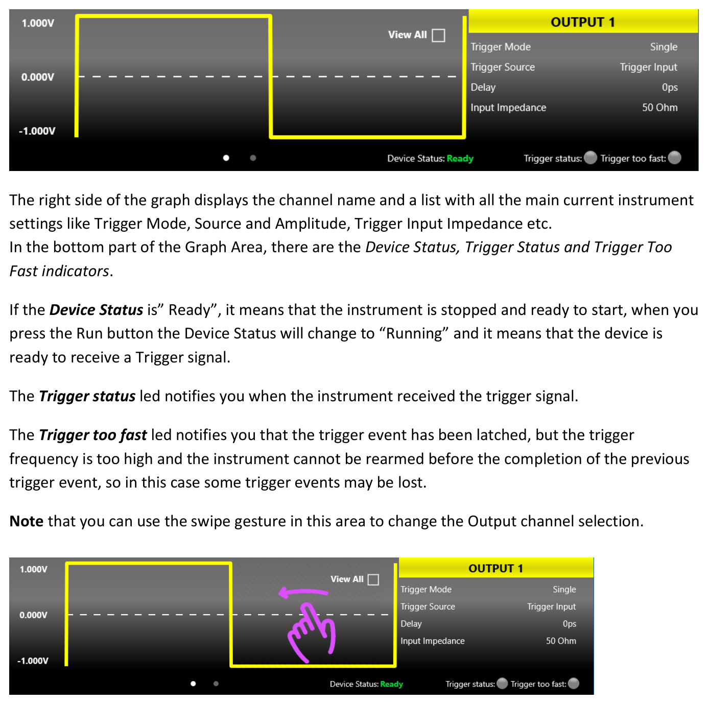
Command Bar Area
The command bar contains touch buttons to control the instrument. START/STOP sets the instrument to Running or Ready (Stopped). In Continuous mode, pressing Start begins output pulse generation and pressing again stops it; in Single, Gated and Burst mode the button arms the instrument to receive the trigger, and output pulses are generated as soon as the trigger is received. Trigger Button sends an internal software trigger. Output Channels Buttons (OUT1-OUT4) change the output channel page; pressing again turns the output OFF/ON via a relay. Settings Button opens the Settings page (Trigger, Output and Clock settings). Load Default loads the default settings. Change Format switches between Format A and Format B. Remote Button enters or exits Remote Mode. More Button accesses other features. The More menu includes Exit, Exit Full Screen, Calibration, Default, Load From, Save As, Export, Numeric Keyboard, Beep, About and Help (open the User Manual).
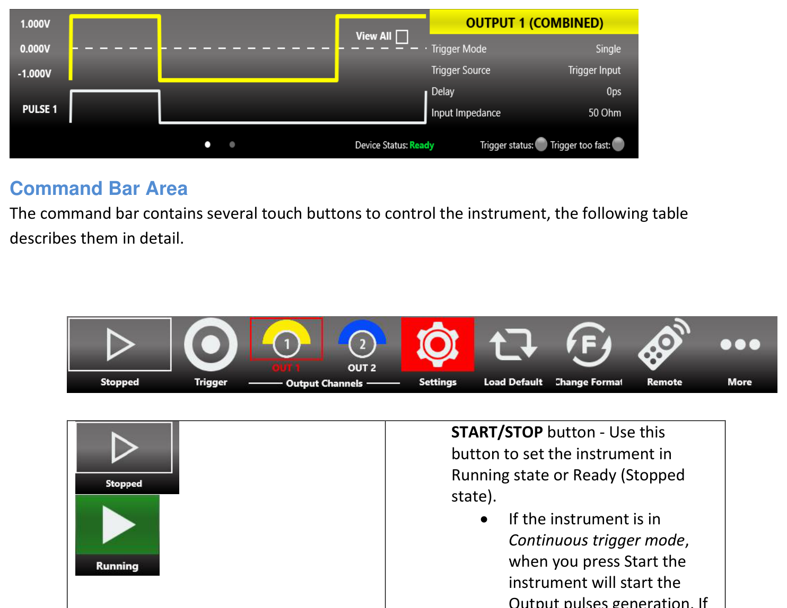
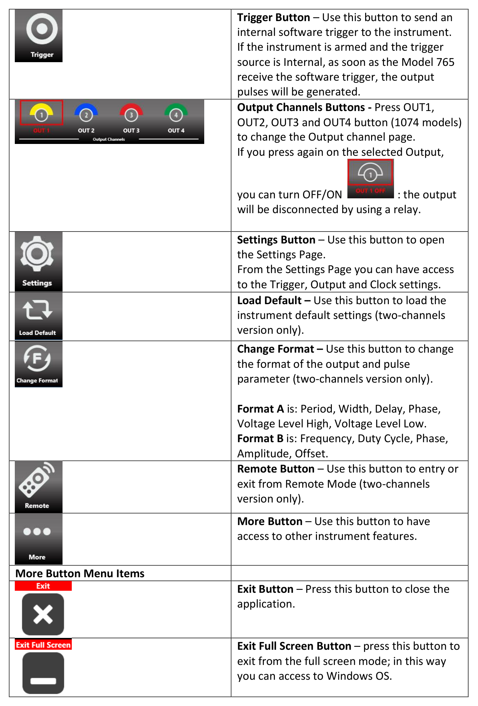
11. Configurations
A configuration contains the data in proprietary format relative to the current instrument settings. You can save and load the instrument settings using the "Save As.." and "Load From..." buttons.
Save As...
A configuration can be saved with the "Save As" button, which opens a dialog box. The configuration is saved in the configuration list accessed by the "Load From" dialog. You can add a new configuration entry or overwrite an existing one; to create a new entry, write a name in the text box at the bottom of the page and click "Add New".
Export Configuration
Touching the Export Configuration button exports a proprietary binary .zip file of the current configuration. The exported file can be used to share configurations between different users or instruments.
Load From...
Touching the "Load From" button in the "More" menu opens a page showing all saved and imported configurations. Selecting an existing configuration loads all its settings into the instrument. In the Load From page you can delete, import or lock a configuration; a locked configuration cannot be deleted or overwritten. The Import Configuration button imports a configuration file from a different machine or user; the imported configuration is inserted in the Load From list.
12. Settings
The Settings button gives access to the Output, Trigger and Clock Settings pages.
Trigger Setup
Select "Trigger Settings" on the dropdown list to open the Trigger Setup page, where you can select the Trigger Mode, Trigger Source, Trigger Output Amplitude and Delay, Trigger Input and timer characteristics.
| Trigger Control | Description |
|---|---|
| Trigger Mode | Single, Burst, Gated or Continuous (see the Trigger Modes section). |
| Trigger Source | External: trigger from the TRG.IN SMA connector and the Trigger button. Timer: trigger linked to the internal software Timer and the Trigger button; set the timer from 20 ns to 50 s, and a trigger is generated when the countdown reaches zero. Button: trigger from the software (UI button or SCPI) or the front-panel button only. |
| Trigger Info | Indicators for Trigger Input Frequency, missed trigger and trigger too fast. |
| Trigger Output | In Single, Burst, Continuous and Gated mode, set the Trigger Output Amplitude, the Delay [s] from the Trigger In signal and the Trigger Output Polarity. You can also select the Trigger Output Source from Output 1-4 (PG-1074) or Output 1-2 (PG-1072). |
| Trigger Input | In Single, Burst and Gated mode, set the Trigger Input Threshold, slope (positive or negative) and input impedance (50 Ohm or 1 k Ohm). Autosense measures the threshold automatically. |
Output Settings
Select "Outputs Settings" to open the page where you set output channel features such as pulse mode (single, double, triple or quadruple), load impedance and output polarity.
| Control | Description |
|---|---|
| Pulse Mode | Single, double, triple or quadruple. For the maximum 800 MHz repetition rate, select Quadruple mode, Period 5 ns, Width 0.625 ns on each pulse, Delay 0 ns on Pulse 1, 1.25 ns on Pulse 2, 2.5 ns on Pulse 3 and 3.75 ns on Pulse 4. |
| Invert | When ON, inverts the output polarity. |
| Impedance Value [Ohm] | If Auto Load Compensation is Off, specify the load impedance attached to the selected output connector. |
| Auto Load Compensation | When On, the generator automatically corrects to deliver the displayed voltage levels to any load from 50 Ohm to 100 M Ohm. |
| Initial Delay [s] | The initial delay of the selected channel from the Trigger Output signal. Output pulses follow the Trigger Output by a Delay user parameter plus the Initial Delay. |
| Retriggerable Delay | If Off, on a trigger event the instrument waits for the Initial Delay before starting output pulse generation, ignoring trigger events during the Initial Delay. If On, the instrument records all trigger events arriving during the Initial Delay for up to 2.5 us, allowing the maximum trigger rate independent of the Initial Delay. |
| Trigger Prescaler [N] | Number of Trigger IN edges discarded from the last valid edge (0 to 65535); for example, lets you decrease the Trigger IN rate. |
Clock Settings
Select "Clock Settings" to open the Clock Setup page. Clock Source specifies Internal or External. With Internal Clock, the time base is synthesized from an internally generated reference clock. With External, the time base is synthesized using the clock provided to the Ext. Clock IN SMA connector; specify the External Clock Frequency from 10 MHz to 100 MHz.
13. Remote / Local Mode & Self Calibration
Remote / Local Mode
The Remote/Local page enables or disables the VXI-11 server. By default the VXI-11 server is enabled, meaning the instrument can accept SCPI commands from a remote machine; when SCPI commands are received, the UI changes accordingly. You cannot control the Model 765 by sending SCPI commands on the local machine. If the VXI-11 server is disabled, SCPI command communication is disabled.
Remote Desktop Connection
To connect to the instrument using a remote desktop connection, use the credentials Computer Name: AT, User Name: AT, Password: 1234.
Self Calibration and Diagnostic
The instrument performs a limited set of hardware tests at power-on. You can also perform Self Calibration and Self Diagnostic from the More → Calibration/Diagnostic page.
Self Calibration
This calibration primarily checks DC accuracy using the internal calibration routines.
- Click More → Calibration and Diagnostic.
- Click the Warm up Timer; a dialog shows the warm-up timer. Wait 30 minutes (press Stop to terminate warming up).
- When 30 minutes is shown, press Stop.
- Click Self Calibration to start; a dialog appears.
- Self Calibration may take more than 10 minutes; it can be stopped with Stop.
- When complete, press Close.
Self Diagnostic
This test verifies that your instrument is operating correctly. Allow a 30 minute warm-up period first. Click More → Calibration and Diagnostic, run the Warm up Timer for 30 minutes and press Stop, then click Self Diagnostic; a dialog appears and the diagnostic starts. You can interrupt it with Stop. During the operation, the steps are displayed under the Description section.
Quick Tips
Allow a 30 minute warm-up period before Self Calibration or Self Diagnostic. Disconnect all cables from the instrument before performing them. It is recommended that Self Calibration be performed along with a periodic check. Do not power off the instrument during Self Calibration or Self Diagnostic. If the power is turned off during Self Calibration, reload the Factory Calibration parameters.
14. Model 765-HV Specifications
The following specifications are taken from the Model 765-HV datasheet (document V1.3) and describe the high-voltage variant. They supersede the base-765 output levels cited earlier in this manual. The base Model 765 and the 765-HV share the same timing engine, trigger system, clock, and SimpleRider software.
Timing
| Parameter | Specification |
|---|---|
| Pulse Period | |
| Range (spec.) | 5 ns to 8 sec |
| Resolution (spec.) | 10 ps |
| RMS Jitter1 | 15 ps |
| Pulse Frequency | |
| Range (spec.) | 0.125 Hz to 200 MHz (single pulse mode); 0.25 Hz to 400 MHz (double, triple and quadruple pulse mode) |
| Accuracy | ± 2 ppm max |
| Pulse Width | |
| Range (spec.) | 1 ns to (period − 1 ns) |
| Resolution (spec.) | 10 ps |
| Accuracy | ± (1 % + 0 ps)2 |
| RMS Jitter1 | < 10 ps |
| Pulse Delay (single / double / triple / quadruple) | |
| Range (spec.) | 0 ps to period |
| Resolution (spec.) | 10 ps |
| Accuracy | ± (0.1 % + 100 ps) |
1 All channels at the same frequency in single pulse mode and continuous mode. 2 With Offset ≠ 0 V the width can deviate from this specification depending on the Offset voltage and other parameters.
Output Specifications (50 Ohm load)
| Parameter | Specification |
|---|---|
| Impedance | 50 Ohm nominal |
| Amplitude | |
| Range pk-pk (spec.) | 100 mVpp to 50 Vpp |
| Resolution (spec.) | 10 mV |
| Absolute accuracy (spec.) | ±(2 % of amplitude p-p + 2 % of |DC Offset| + 200 mV) |
| DC Offset | |
| Range (spec.) | 0 V or ± 25 V adjustable |
| Resolution (spec.) | 10 mV |
| Baseline Offset | |
| Range (spec.) | −25 V, −12.5 V, 0 V, +12.5 V, +25 V (software selectable) |
| Resolution (spec.) | 12.5 mV |
| Rise Time (20 % to 80 %, Offset = 0 V) | < 400 ps (up to 50 Vpp amplitude) |
| Rise Time (10 % to 90 %, Offset = 0 V) | < 570 ps (up to 25 Vpp amplitude); < 630 ps (up to 50 Vpp amplitude) |
| Fall Time (20 % to 80 %, Offset = 0 V) | < 430 ps (up to 25 Vpp amplitude); < 530 ps (up to 50 Vpp amplitude) |
| Fall Time (10 % to 90 %) | < 640 ps (up to 25 Vpp amplitude); < 840 ps (up to 50 Vpp amplitude) |
| Overshoot | < 8 % (up to 25 Vpp amplitude); < 5 % (25 Vpp to 50 Vpp amplitude) |
| Channel to Channel RMS Jitter1 | < 15 ps |
| Initial Delay | 0 s to 8 s (retriggerable delay off); 0 s to 2.5 us (retriggerable delay on) |
Trigger Input
| Parameter | Specification |
|---|---|
| Impedance | 50 Ohm or 1 k Ohm programmable |
| Range (spec.) | ± 3.5 V (50 Ohm input impedance); ± 10 V (1 k Ohm input impedance) |
| Minimum detectable amplitude (spec.) | < 50 mVpp |
| Threshold | |
| Range (spec.) | ± 8 V |
| Resolution (spec.) | 10 mV |
| Accuracy | ± 100 mV |
| Max. input frequency (spec.) | 40 MHz |
| Min. pulse width (spec.) | 1 ns |
| Max. external width mode input frequency (spec.) | 400 MHz (duty cycle = 50 %) |
| Edge selection | Positive, negative, both |
| Prescaler (for every channel) | 0 to 65535 |
Trigger Output
| Parameter | Specification |
|---|---|
| Impedance | 50 Ohm nominal |
| Amplitude (open load) | |
| Range (spec.) | 1.8 V to 3.3 V adjustable |
| Resolution (spec.) | 1 mV |
| Accuracy | ± 1 % |
| Delay (trigger in to trigger out) | < 100 ns |
| RMS jitter (trigger in to trigger out) | < 30 ps (Trigger IN frequency ≤ 15 MHz) |
| Width | 10 ns (single, burst mode); Period / 2 (continuous mode) |
| Initial delay | 0 s to 8 s (continuous mode); 0 s to 2.5 us (single, burst, gated mode) |
Internal Timer
| Parameter | Specification |
|---|---|
| Time range (frequency range) | 25 ns to 42.9 sec (40 MHz to 23.3 mHz) |
| Time resolution | 1 ps |
| Frequency accuracy | ± 2 ppm max |
External Clock IN
| Parameter | Specification |
|---|---|
| Connector type | SMA on rear panel |
| Input impedance | 50 Ohm, AC coupled |
| Input voltage range | −5 dBm to 4 dBm sine or square wave (rise time T10-90 < 1 ns and duty cycle from 40 % to 60 %) |
| Damage level | +8 dBm or ±15 VDC max |
| Frequency range | 10 MHz to 100 MHz |
External Clock OUT
| Parameter | Specification |
|---|---|
| Connector type | SMA on rear panel |
| Output impedance | 50 Ohm, DC coupled |
| Frequency | 10 MHz or External Clock IN frequency |
| Accuracy | ± 2 ppm max |
| Aging | ± 1.0 ppm/year max |
| Amplitude | Square wave: 0 V to 1.25 V into 50 Ohm, 0 V to 2.5 V into High Z |
Programmability
- Trigger modes: single, continuous, burst, gated.
- Multiple pulse modes: single, double, triple, quadruple, external width.
Power
| Parameter | Specification |
|---|---|
| Voltage range | 100-240 VAC ±10 % |
| Frequency range | 47-63 Hz |
| Max. power consumption | 300 W |
Environmental Characteristics
| Parameter | Specification |
|---|---|
| Temperature (operating) | +5 °C to +40 °C (+41 °F to 104 °F) |
| Temperature (non-operating) | −20 °C to +60 °C (−4 °F to 140 °F) |
| Humidity (operating) | 5 % to 80 % RH, max wet bulb 29 °C at or below +40 °C (de-rates to 20.6 % RH at +40 °C), non-condensing |
| Humidity (non-operating) | 5 % to 95 % RH, max wet bulb 40 °C at or below +60 °C (de-rates to 29.8 % RH at +60 °C), non-condensing |
| Altitude (operating) | 3,000 meters (9,842 feet) maximum at or below 25 °C |
| Altitude (non-operating) | 12,000 meters (39,370 feet) maximum |
EMC and Safety
| Parameter | Specification |
|---|---|
| Safety | EN 61010-1 |
| Main standards | EN 61326-1:2013 – Electrical equipment for measurement, control and laboratory use – EMC requirements – Part 1: General requirements |
| Immunity | EN 61326-1:2013 |
General Characteristics
| Parameter | 765-HV-1C | 765-HV-2C |
|---|---|---|
| Display | 7 inch, 1024 x 600, capacitive touch LCD | |
| Operating system | Windows 10 | |
| External dimensions | W 445 mm, H 135 mm, D 320 mm (3U 19" rackmount) | |
| Weight | 21.4 lbs (9.7 kg) | |
| Front panel connectors | OUTPUT1 (SMA); TRG.IN (SMA); TRG.OUT (SMA); 2 USB 3.0 ports | OUTPUT1 (SMA); OUTPUT2 (SMA); TRG.IN (SMA); TRG.OUT (SMA); 2 USB 3.0 ports |
| Rear panel connectors | External monitor ports (HDMI, VGA); 2 USB 2.0 ports; 2 USB 3.0 ports; 3 COM ports; 2 Ethernet ports (10/100/1000BaseT, RJ45); audio In/Out ports; 2 PS/2 keyboard and mouse ports; External Clock IN (SMA); External Clock OUT (SMA) | |
| Hard disk | 128 GB SSD | |
| Processor | Intel Celeron J1900, 2 GHz (or better) | |
| Processor memory | 8 GB | |
Ordering Information
| Model / P/N | Description |
|---|---|
| Model 765-HV-1C | 1 Channel HV Pulse Generator |
| Model 765-HV-2C | 2 Channel HV Pulse Generator |
| P/N 765-RMKit | Rack Mount Kit for the 765-X |
15. SCPI Remote Command Summary
The Model 765 and 765-HV are controlled remotely over the VXI-11 (LAN) protocol using SCPI commands. The command set below is the summary from the Model 765 Series Programmer Manual (PG1000 Series), grouped by subsystem. Commands marked Rev. B only are available only on Rev. B instruments. For full syntax, arguments, and return values, refer to the Programmer Manual command descriptions.
*IDN?, which returns identification such as ACTIVE TECHNOLOGIES, AT-PULSE-RIDER PG1072 00000001, SCPI 99.0, SV 1.0.0.| Keyword | Description |
|---|---|
Calibration and Diagnostic | Initiate self-calibration routines and examine diagnostic results. |
*CAL? | Perform self-calibration and return result status. |
DIAGnostic | Perform a self-test and return result status. |
*TST? | Perform a self-test and return result status. |
Date and Time | Set or query the system date and time. |
DATE | Set or query the system date. |
TIME | Set or query the system time. |
Memory | Change setup-memory attributes. |
MEMory:RECall | Recall a specified project file in the file system. |
MEMory:SAVE | Save the current project file in the file system. |
MEMory:STATe:DELete | Delete the setup memory. |
MEMory:STATe:LOCK | Lock or unlock the setup memory and query whether the memory is locked. |
MEMory:STATe:VALid? | Query the availability of setup memory. |
*RCL | Recall instrument settings from setup memory. |
*SAV | Save instrument settings to setup memory. |
DELete:SETUp | Delete a configuration. Rev. B only. |
RECALL:SETUp | Restore the instrument settings from a configuration name. Rev. B only. |
MEMory:NSTates? | Return the total number of available saved configurations. Rev. B only. |
MEMory:STATe:CATalog? | List the names of available saved configurations. Rev. B only. |
MEMory:STATe:NAME | Copy a configuration. Rev. B only. |
Mass Memory | Change mass-memory attributes. |
MMEMory:LOAD:STATe | Load a configuration file into the configurations list. |
MMEMory:STORe:STATe | Save a configuration from the list into an archive (.zip). |
MMEMory:CATalog? | Return the entire list of files and directories in the current directory. Rev. B only. |
MMEMory:CDIRectory | Set or return the current directory of the file system. Rev. B only. |
MMEMory:COPY | Copy a source file to a target file. Rev. B only. |
MMEMory:DATA | Set or return block data to / from a file. Rev. B only. |
MMEMory:DATA:SIZE? | Return the size in bytes of a selected file. Rev. B only. |
MMEMory:DELete | Delete a file or directory. Rev. B only. |
MMEMory:DOWNload:DATA | Download data from the host computer to the instrument mass memory. Rev. B only. |
MMEMory:DOWNload:FNAMe | Specify the file name for downloading data to mass memory. Rev. B only. |
MMEMory:LOAD:ALL | Load a configuration file and set it as the current configuration. Rev. B only. |
MMEMory:MDIRectory | Create a new directory in the current path. Rev. B only. |
MMEMory:MOVE | Move a file on the mass-memory device. Rev. B only. |
MMEMory:MSIS | Set or return the mass-storage device used by all MMEMory commands. Rev. B only. |
MMEMory:OPEN:SETup | Load a configuration file and set it as the current configuration. Rev. B only. |
MMEMory:RDIRectory | Remove an empty directory. Rev. B only. |
MMEMory:SAVE:SETup | Save the current configuration in an archive (.zip). Rev. B only. |
MMEMory:STORe:ALL | Save the current configuration in an archive (.zip). Rev. B only. |
MMEMory:UPLoad? | Return the contents of a file. Rev. B only. |
Output | Set output attributes. |
OUTPut[1|2][:STATe] | Set or query the output state (on or off) on a specified channel. |
OUTPut[1|2]:PULSe:MODE | Set or query the pulse mode relative to output N. |
Display | Manage features related to the user interface. |
HCOPy:SDUMp[:IMMediate] | Create a screenshot of the display screen. |
DISPlay:CHANnel | Change the selected output page on the user interface. |
DISPlay:UNIT:VOLT | Select the method for specifying voltage ranges. Rev. B only. |
DISPlay[:WINDow]:TEXT:CLEar | Delete a text message. Rev. B only. |
DISPlay[:WINDow]:TEXT[:DATA] | Set or query the text-message display. Rev. B only. |
Source | Set output pulse parameters. |
[SOURce[1|2|3|4]]:PERiod | Set or query the period on output N. |
[SOURce[1|2|3|4]]:FREQuency | Set or query the frequency on output N. |
[SOURce[1|2|3|4]]:BURSt:NCYCles | Set or query the number of burst cycles. |
[SOURce[1|2|3|4]]:INITDELay | Set or query the output N initial delay. |
[SOURce[1|2|3|4]]:LOAD:IMPedance | Set or query the output N load impedance. |
[SOURce[1|2|3|4]]:LOAD:COMPensation | Set or query the output N load-compensation mode. |
[SOURce[1|2|3|4]]:INVert | Invert the output N polarity. |
[SOURce[1|2|3|4]]:VOLTage[:LEVel][:IMMediate][:AMPLitude] | Set or query the voltage level on output N. |
[SOURce[1|2|3|4]]:VOLTage[:LEVel][:IMMediate]:OFFSet | Set or query the offset level on output N. |
[SOURce[1|2|3|4]]:VOLTage[:LEVel][:IMMediate]:HIGH | Set or query the high level on output N. |
[SOURce[1|2|3|4]]:VOLTage[:LEVel][:IMMediate]:LOW | Set or query the low level on output N. |
[SOURce[1|2|3|4]]:PULSe[1|2|3|4]:WIDth | Set or query the pulse M width on output N. |
[SOURce[1|2|3|4]]:PULSe[1|2|3|4]:DELay | Set or query the pulse M delay on output N. |
[SOURce[1|2|3|4]]:PULSe[1|2|3|4]:DCYCle | Set or query the pulse M duty cycle on output N. |
[SOURce[1|2|3|4]]:PULSe[1|2|3|4]:PHASe | Set or query the pulse M phase on output N. |
[SOURce[1|2|3|4]]:TRIGger:RETRIGgerable | Set or query the retriggerable-delay parameter on output N. |
[SOURce[1|2|3|4]]:TRIGger:PRESCaler | Set or query the trigger-prescaler parameter on output N. |
Device | Control the device. |
PULSEGENControl:START | Arm the instrument (running state), ready to receive the trigger signal. |
PULSEGENControl:STOP | Stop the instrument. |
PULSEGENControl:STATus? | Return the status of the instrument. |
PULSEGENControl:CONFigure:CNUMber? | Return the number of output channels available. Rev. B only. |
PULSEGENControl:SREStore | Open a setup file into the setup memory. Rev. B only. |
PULSEGENControl:SSAVe | Save the pulse-generator setup. Rev. B only. |
Status | Determine the status of the instrument. |
STATus:OPERation[:EVENt]? | Return the value in the Operation Event Register. |
STATus:OPERation:CONDition? | Return the contents of the Operation Condition Register. |
STATus:OPERation:ENABle | Set or query the mask for the Operation Enable Register. |
STATus:QUEStionable[:EVENt]? | Return the value in the Questionable Event Register. |
STATus:QUEStionable:CONDition? | Return the contents of the Questionable Condition Register. |
STATus:QUEStionable:ENABle | Set or query the mask for the Questionable Enable Register. |
STATus:PRESet | Preset the SCPI Enable Register. |
*CLS | Clear all event registers and the queue. |
*ESE | Set or query the Event Status Enable Register. |
*ESR? | Return the contents of the Standard Event Status Register. |
*SRE | Set or query the Service Request Enable Register. |
*STB? | Read the Status Byte Register. |
DESE | Set or query the bits in the Device Event Status Enable Register (DESER). |
*PSC | Set or query power-on status clear. Rev. B only. |
Synchronization | Synchronize instrument operation. |
*OPC | Set or query the operation-complete message. |
*WAI | Wait to continue until pending commands complete. |
System | Control miscellaneous instrument functions. |
*IDN? | Return identification information for the pulse generator. |
*RST | Reset the pulse generator to its default state. |
SYSTem:TEMPerature? | Query the pulse-generator FPGA temperature. |
SYSTem:BEEPer[:IMMediate] | Generate an audible tone. |
SYSTem:BEEPer:STATe | Set or query the beeper state. |
SYSTem:ERRor[:NEXT]? | Return the contents of the error event queue. |
SYSTem:KCLick[:STATe] | Enable, disable, or query the key-click and UI touch sound. |
SYSTem:TLOCk[:STATe] | Lock, unlock, or query the lock state of the user interface. |
SYSTem:ULANguage? | Query the language for the display screen. |
SYSTem:VERSion? | Return the SCPI conformance version information. |
*OPT? | Return the implemented options for the pulse generator. Rev. B only. |
SYSTem:KLOCk[:STATe] | Lock or unlock the instrument front-panel controls. Rev. B only. |
SYSTem:SECurity:IMMediate | Reset to factory default. Rev. B only. |
Trigger | Set the trigger input and output features. |
*TRG | Generate a trigger event. |
TRIGger[:SEQuence][:IMMediate] | Generate a trigger event. |
TRIGger[:SEQuence]:CLEAr | Clear the trigger event. |
TRIGger[:SEQuence]:STATus? | Query the status of the trigger event. |
TRIGger[:SEQuence]:MISSed? | Query whether the trigger event has been missed. |
TRIGger[:SEQuence]:MODE | Set or query the trigger mode. |
TRIGger[:SEQuence]:SOURce | Set or query the source of the trigger input signal. |
TRIGger[:SEQuence]:SLOPe | Set or query the slope of the trigger input signal. |
TRIGger[:SEQuence]:THREshold | Set or query the threshold of the trigger input signal. |
TRIGger[:SEQuence]:AUTOSENSe | Automatically sense and set the trigger input threshold. |
TRIGger[:SEQuence]:IMPedance | Set or query the impedance of the trigger input signal. |
TRIGger[:SEQuence]:TIMer | Set or query the trigger timer. |
TRIGger[:SEQuence]:FREQuency? | Get the trigger input signal frequency. |
TRIGger:OUTPut:AMPLitude | Set or query the amplitude of the trigger output signal. |
TRIGger:OUTPut:DELay | Set or query the delay of the trigger output signal. |
TRIGger:OUTPut:SOURce | Set or query the source of the trigger output signal. |
TRIGger:OUTPut:POLarity | Set or query the polarity of the trigger output signal. |
TRIGger:OUTPut:ENABLe | Set or query the enable status of the trigger output signal. |
Clock | Set and query the clock source and external clock value. Rev. B only. |
ROSCillator | Set or return the external clock value in Hz. Rev. B only. |
ROSCillator:SOURce | Set or return the clock source to internal or external. Rev. B only. |
*Note. This is a command summary. Allow a 30-minute warm-up period after power-on before sending *CAL?, DIAGnostic, or *TST?; otherwise the calibration or self-test result is not valid.
16. Contact
Berkeley Nucleonics Corporation. Phone: (415) 453-9955. Email: info@berkeleynucleonics.com. Address: 2955 Kerner Blvd, San Rafael, CA 94901. Web: www.berkeleynucleonics.com.
Model 765 User Manual. Document Version Number: Rev B, 2.3. Print Code: 02025060.